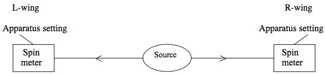
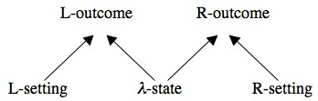
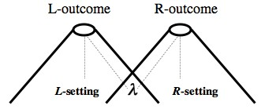
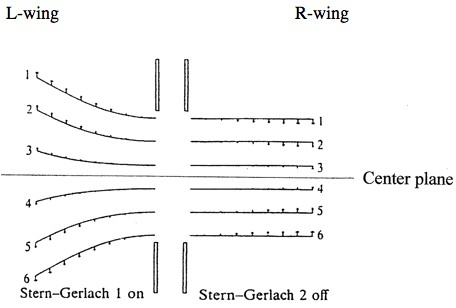

Action at a Distance in Quantum Mechanics
In the quantum realm, there are curious correlations between the properties of distant systems. An example of such correlations is provided by the famous Einstein-Podolsky-Rosen/Bohm experiment. The correlations in the EPR/B experiment strongly suggest that there are non-local influences between distant systems, i.e., systems between which no light signal can travel, and indeed orthodox quantum mechanics and its various interpretations postulate the existence of such non-locality. Yet, the question of whether the EPR/B correlations imply non-locality and the exact nature of this non-locality is a matter of ongoing controversy. Focusing on EPR/B-type experiments, in this entry we consider the nature of the various kinds of non-locality postulated by different interpretations of quantum mechanics. Based on this consideration, we briefly discuss the compatibility of these interpretations with the special theory of relativity.
- 1. Introduction
- 2. Bell's theorem and non-locality
- 3. The analysis of factorizability
- 4. Action at a distance, holism and non-separability
- 5. Holism, non-separability and action at a distance in quantum mechanics
- 6. Superluminal causation
- 7. Superluminal signaling
- 8. The analysis of factorizability: implications for quantum non-locality
- 9. Can there be ‘local’ quantum theories?
- 10. Can quantum non-locality be reconciled with relativity?
- Bibliography
- Academic Tools
- Other Internet Resources
- Related Entries
1. Introduction
The quantum realm involves curious correlations between distant events. A well-known example is David Bohm's (1951) version of the famous thought experiment that Einstein, Podolsky and Rosen proposed in 1935 (henceforth, the EPR/B experiment). Pairs of particles are emitted from a source in the so-called spin singlet state and rush in opposite directions (see Fig. 1 below). When the particles are widely separated from each other, they each encounter a measuring apparatus that can be set to measure their spin components along various directions. Although the measurement events are distant from each other, so that no slower-than-light or light signal can travel between them, the measurement outcomes are curiously correlated.[1] That is, while the outcome of each of the distant spin measurements seems to be a matter of pure chance, they are correlated with each other: The joint probability of the distant outcomes is different from the product of their single probabilities. For example, the probability that each of the particles will spin clockwise about the z-axis in a z-spin measurement (i.e., a measurement of the spin component along the z direction) appears to be ½. Yet, the outcomes of such measurements are perfectly anti-correlated: If the left-hand-side (L-) particle happens to spin clockwise (anti-clockwise) about the z-axis, the right-hand-side (R-) particle will spin anti-clockwise (clockwise) about that axis. And this is true even if the measurements are made simultaneously.
Figure 1: A schematic illustration of the EPR/B experiment. Particle pairs in the spin singlet state are emitted in opposite directions and when they are distant from each other (i.e., space-like separated), they encounter measurement apparatuses that can be set to measure spin components along various directions.
The curious EPR/B correlations strongly suggest the existence of non-local influences between the two measurement events, and indeed orthodox ‘collapse’ quantum mechanics supports this suggestion. According to this theory, before the measurements the particles do not have any definite spin. The particles come to possess a definite spin only with the first spin measurement, and the outcome of this measurement is a matter of chance. If, for example, the first measurement is a z-spin measurement on the L-particle, the L-particle will spin either clockwise or anti-clockwise about the z-axis with equal chance. And the outcome of the L-measurement causes an instantaneous change in the spin properties of the distant R-particle. If the L-particle spins clockwise (anti-clockwise) about the z-axis, the R-particle will instantly spin anti-clockwise (clockwise) about the same axis. (It is common to call spins in opposite directions ‘spin up’ and ‘spin down,’ where by convention a clockwise spinning may be called ‘spin up’ and anti-clockwise spinning may be called ‘spin down.’)
It may be argued that orthodox quantum mechanics is false, and that the non-locality postulated by it does not reflect any non-locality in the quantum realm. Alternatively, it may be argued that orthodox quantum mechanics is a good instrument for predictions rather than a fundamental theory of the physical nature of the universe. On this instrumental interpretation, the predictions of quantum mechanics are not an adequate basis for any conclusion about non-locality: This theory is just an incredible oracle (or a crystal ball), which provides a very successful algorithm for predicting measurement outcomes and their probabilities, but it offers little information about ontological matters, such as the nature of objects, properties and causation in the quantum realm.
Einstein, Podolsky and Rosen (1935) thought that quantum mechanics is incomplete and that the curious correlations between distant systems do not amount to action at a distance between them. The apparent instantaneous change in the R-particle's properties during the L-measurement is not really a change of properties, but rather a change of knowledge. (For more about the EPR argument, see the entry on the EPR argument, Redhead 1987, chapter 3, and Albert 1992, chapter 3. For discussions of the EPR argument in the relativistic context, see Ghirardi and Grassi 1994 and Redhead and La Riviere 1997.) On this view, quantum states of systems do not always reflect their complete state. Quantum states of systems generally provide information about some of the properties that systems possess and information about the probabilities of outcomes of measurements on them, and this information does not generally reflect the complete state of the systems. In particular, the information encoded in the spin singlet state is about the probabilities of measurement outcomes of spin properties in various directions, about the conditional probabilities that the L- (R-) particle has a certain spin property given that the R- (L-) particle has another spin property, and about the anti-correlation between the spins that the particles may have in any given direction (for more details, see section 5.1). Thus, the outcome of a z-spin measurement on the L-particle and the spin singlet state (interpreted as a state of knowledge) jointly provide information about the z-spin property of the R-particle. For example, if the outcome of the L-measurement is z-spin ‘up,’ we know that the R-particle has z-spin ‘down’; and if we assume, as EPR did, that there is no curious action at a distance between the distant wings (and that the change of the quantum-mechanical state of the particle pair in the L-measurement is only a change in state of knowledge), we could also conclude that the R-particle had z-spin ‘down’ even before the L-measurement occurs.
How could the L-outcome change our knowledge/ignorance about the R-outcome if it has no influence on it? The simplest and most straightforward reply is that the L- and the R- outcome have a common cause that causes them to be correlated, so that knowledge of one outcome provides knowledge about the other.[2] Yet, the question is whether the predictions of orthodox quantum mechanics, which have been highly confirmed by various experiments, are compatible with the quantum realm being local in the sense of involving no influences between systems between which light and slower-than-light signals cannot travel (i.e., space-like separated systems). More particularly, the question is whether it is possible to construct a local, common-cause model of the EPR/B experiment, i.e., a model that postulates no influence between systems/events in the distant wings of the experiment, and that the correlation between them are due to the state of the particle pair at the source. In 1935, Einstein, Podolsky and Rosen believed that this is possible. But, as John Bell demonstrated in 1964, this belief is difficult to uphold.
2. Bell's theorem and non-locality
In a famous theorem, John Bell (1964) demonstrated that granted some plausible assumptions, any local model of the EPR/B experiment is committed to certain inequalities about the probabilities of measurement outcomes, ‘the Bell inequalities,’ which are incompatible with the quantum-mechanical predictions. When Bell proved his theorem, the EPR/B experiment was only a thought experiment. But due to technological advances, various versions of this experiment have been conducted since the 1970s, and their results have overwhelmingly supported the quantum-mechanical predictions (for brief reviews of these experiments and further references, see the entry on Bell's theorem and Redhead 1987, chapter 4, section 4.3 and ‘Notes and References’). Thus, a wide consensus has it that the quantum realm involves some type of non-locality.
The basic idea of Bell's theorem is as follows. A model of the EPR/B experiment postulates that the state of the particle pair together with the apparatus settings to measure (or not to measure) certain spin properties determine the probabilities for single and joint spin-measurement outcomes. A local Bell model of this experiment also postulates that probabilities of joint outcomes factorize into the single probabilities of the L- and the R- outcomes: The probability of joint outcomes is equal to the product of the probabilities of the single outcomes. More formally, let λ denote the pair's state before any measurement occurs. Let l denote the setting of the L-measurement apparatus to measure spin along the l-axis (i.e., the l-spin of the L-particle), and let r denote the setting of the R-measurement apparatus to measure spin along the r-axis (i.e., the r-spin of the R-particle). Let xl be the outcome of a l-spin measurement in the L-wing, and let yr be the outcome of a r-spin measurement in the R-wing; where xl is either the L-outcome l-spin ‘up’ or the L-outcome l-spin ‘down,’ and yr is either the R-outcome r-spin ‘up’ or the R-outcome r-spin ‘down.’ Let Pλ l r(xl & yr) be the joint probability of the L- and the R-outcome, and Pλ l(xl) and Pλ r(yr) be the single probabilities of the L- and the R-outcome, respectively; where the subscripts λ, l and r denote the factors that are relevant for the probabilities of the outcomes xl and yr. Then, for any λ, l, r, xl and yr:[3]
Factorizability
Pλ l r(xl & yr) = Pλ l(xl) · Pλ r(yr).
(Here and henceforth, for simplicity's sake we shall denote events and states, such as the measurement outcomes, and the propositions that they occur by the same symbols.)
The state λ is typically thought of as the pair's state at the emission time, and it is assumed that this state does not change in any relevant sense between the emission and the first measurement. It is (generally) a different state from the quantum-mechanical pair's state ψ. ψ is assumed to be an incomplete state of the pair, whereas λ is supposed to be a (more) complete state of the pair. Accordingly, pairs with the same state ψ may have different states λ which give rise to different probabilities of outcomes for the same type of measurements. Also, the states λ may be unknown, hidden, inaccessible or uncontrollable.
Factorizability is commonly motivated as a locality condition. In non-local models of the EPR/B experiment, the correlations between the distant outcomes are accounted for by non-local influences between the distant measurement events. For example, in orthodox quantum mechanics the first spin measurement on, say, the L-particle causes an immediate change in the spin properties of the R-particle and in the probabilities of future outcomes of spin measurements on this particle. By contrast, in local models of this experiment the correlations are supposed to be accounted for by a common cause—the pair's state λ (see Fig. 2 below): The pair's state and the L-setting determine the probability of the L-outcome; the pair's state and the R-setting determine the probability of the R-outcome; and the pair's state and the L- and the R-setting determine the probability of joint outcomes, which (as mentioned above) is simply the product of these single probabilities. The idea is that the probability of each of the outcomes is determined by ‘local events,’ i.e., events that are confined to its backward light-cone, and which can only exert subluminal or luminal influences on it (see Figure 3 below); and the distant outcomes are fundamentally independent of each other, and thus their joint probability factorizes. (For more about this reasoning, see sections 6 and 8-9.)
Figure 2: A schematic common-cause model of the EPR/B experiment. Arrows denote causal connections.
Figure 3: A space-time diagram of a local model of the EPR/B experiment. The circles represent the measurement events, and the cones represent their backward light cones, i.e., the boundaries of all the subluminal and luminal influences on them. The dotted lines denote the propagation of the influences of the pair's state at the emission and of the settings of the measurement apparatuses on the measurement outcomes.
A Bell model of the EPR/B experiment also postulates that for each quantum-mechanical state ψ there is a distribution ρ over all the possible pair states λ, which is independent of the settings of the apparatuses. That is, the distribution of the (‘complete’) states λ depends on the (‘incomplete’) state ψ, and this distribution is independent of the particular choice of measurements in the L- and R-wing (including the choice not to measure any quantity). Or formally, for any quantum-mechanical state ψ, L-settings l and l′, and R-settings r and r′:
λ-independence
ρψ l r(λ) = ρψ l′ r(λ) = ρψ l r′(λ) = ρψ l′ r′(λ) = ρψ(λ)
where the subscripts denote the factors that are potentially relevant for the distribution of the states λ.
Although the model probabilities (i.e., the probabilities of outcomes prescribed by the states λ) are different from the corresponding quantum-mechanical probabilities of outcomes (i.e., the probabilities prescribed by the quantum-mechanical states ψ), the quantum mechanical probabilities (which have been systematically confirmed) are recovered by averaging over the model probabilities. That is, it is supposed that the quantum-mechanical probabilities Pψ l r(xl & yr), Pψ l(xl) and Pψ r(yr) are obtained by averaging over the model probabilities Pλ l r(xl & yr), Pλ l (xl) and Pλ r(yr), respectively: For any ψ, l, r, xl and yr,
Empirical Adequacy
Pψ l r(xl & yr) = ∫λ Pλ l r(xl & yr) · ρψ l r(λ)
Pψ l(xl) = ∫λ Pλ l(xl ) · ρψ l(λ)
Pψ r(yr) = ∫λ Pλ r(yr) · ρψ r(λ).[4]
The assumption of λ-independence is very plausible. It postulates that (complete) pair states at the source are uncorrelated with the settings of the measurement apparatuses. And independently of one's philosophical view about free will, this assumption is strongly suggested by our experience, according to which it seems possible to prepare the state of particle pairs at the source independently of the set up of the measurement apparatuses.
There are two ways to try to explain a failure of λ-independence. One possible explanation is that pairs' states and apparatus settings share a common cause, which always correlates certain types of pairs' states λ with certain types of L- and R-setting. Such a causal hypothesis will be difficult to reconcile with the common belief that apparatus settings are controllable at experimenters' will, and thus could be set independently of the pair's state at the source. Furthermore, thinking of all the different ways one can measure spin properties and the variety of ways in which apparatus settings can be chosen, the postulation of such common cause explanation for settings and pairs' states would seem highly ad hoc and its existence conspiratorial.
Another possible explanation for the failure of λ-independence is that the apparatus settings influence the pair's state at the source, and accordingly the distribution of the possible pairs' states λ is dependent upon the settings. Since the settings can be made after the emission of the particle pair from the source, this kind of violation of λ-independence would require backward causation. (For advocates of this way out of non-locality, see Costa de Beauregard 1977, 1979, 1985, Sutherland 1983, 1998, 2006 and Price 1984, 1994, 1996, chapters 3, 8 and 9.) On some readings of John Cramer's (1980, 1986) transactional interpretation of quantum mechanics (see Maudlin 1994, pp. 197-199), such violation of λ-independence is postulated. According to this interpretation, the source sends ‘offer’ waves forward to the measurement apparatuses, and the apparatuses send ‘confirmation’ waves (from the space-time regions of the measurement events) backward to the source, thus affecting the states of emitted pairs according to the settings of the apparatuses. The question of whether such a theory can reproduce the predictions of quantum mechanics is a controversial matter (see Maudlin 1994, pp. 197-199, Berkovitz 2002, section 5, and Kastner 2006). It is noteworthy, however, that while the violation of λ-independence is sufficient for circumventing Bell's theorem, the failure of this condition per se does not substantiate locality. The challenge of providing a local model of the EPR/B experiment also applies to models that violate λ-independence. (For more about these issues, see sections 9 and 10.3.)
In any case, as Bell's theorem demonstrates, factorizability, λ-independence and empirical adequacy jointly imply the Bell inequalities, which are violated by the predictions of orthodox quantum mechanics (Bell 1964, 1966, 1971, 1975a,b). Granted the systematic confirmation of the predictions of orthodox quantum mechanics and the plausibility of λ-independence, Bell inferred that factorizability fails in the EPR/B experiment. Thus, interpreting factorizability as a locality condition, he concluded that the quantum realm is non-local. (For further discussions of Bell's theorem, the Bell inequalities and non-locality, see Bell 1966, 1971, 1975a,b, 1981, Clauser et al 1969, Clauser and Horne 1974, Shimony 1993, chapter 8, Fine 1982a,b, Redhead 1987, chapter 4, Butterfield 1989, 1992a, Pitowsky 1989, Greenberger, Horne and Zeilinger 1989, Greenberger, Horne, Shimony and Zeilinger 1990, Mermin 1990, and the entry on Bell's theorem.)
3. The analysis of factorizability
Following Bell's work, a broad consensus has it that the quantum realm involves some type of non-locality (for examples, see Clauser and Horne 1974, Jarrett 1984,1989, Shimony 1984, Redhead 1987, Butterfield 1989, 1992a,b, 1994, Howard 1989, Healey 1991, 1992, 1994, Teller 1989, Clifton, Butterfield and Redhead 1990, Clifton 1991, Maudlin 1994, Berkovitz 1995a,b, 1998a,b, and references therein).[5] But there is an ongoing controversy as to its exact nature and its compatibility with relativity theory. One aspect of this controversy is over whether the analysis of factorizability and the different ways it could be violated may shed light on these issues. Factorizability is equivalent to the conjunction of two conditions (Jarrett 1984, 1989, Shimony 1984):[6]
Parameter independence. The probability of a distant measurement outcome in the EPR/B experiment is independent of the setting of the nearby measurement apparatus. Or formally, for any pair's state λ, L-setting l, R-setting r, L-outcome xl and R-outcome yr:PI
Pλ l r(xl) = Pλ l(xl) and Pλ l r(yr) = Pλ r(yr).
Outcome independence. The probability of a distant measurement outcome in the EPR/B experiment is independent of the nearby measurement outcome. Or formally, for any pair's state λ, L-setting l, R-setting r, L-outcome xl and R-outcome yr:
Pλ l r(xl / yr) = Pλ l r(xl) and Pλ l r(yr / xl) = Pλ l r(yr) Pλ l r(yr) > 0 Pλ l r(xl) > 0,
or more generally,OI
Pλ l r(xl & yr) = Pλ l r(xl) · Pλ l r(yr).
Assuming λ-independence (see section 2), any empirically adequate theory will have to violate OI or PI. A common view has it that violations of PI involve a different type of non-locality than violations of OI: Violations of PI involve some type of action-at-a-distance that is impossible to reconcile with relativity (Shimony 1984, Redhead 1987, p. 108), whereas violations of OI involve some type of holism, non-separability and/or passion-at-a-distance that may be possible to reconcile with relativity (Shimony 1984, Readhead 1987, pp. 107, 168-169, Howard 1989, Teller 1989).
On the other hand, there is the view that the analysis above (as well as other similar analyses of factorizability[7]) is immaterial for studying quantum non-locality (Butterfield 1992a, pp. 63-64, Jones and Clifton 1993, Maudlin 1994, pp. 96 and 149) and even misleading (Maudlin 1994, pp. 94-95 and 97-98). On this alternative view, the way to examine the nature of quantum non-locality is to study the ontology postulated by the various interpretations of quantum mechanics and alternative quantum theories.[8] In sections 4-7, we shall follow this methodology and discuss the nature of non-locality postulated by several quantum theories. The discussion in these sections will furnish the ground for evaluating the above controversy in section 8.
4. Action at a distance, holism and non-separability
4.1 Action at a distance
In orthodox quantum mechanics as well as in any other current quantum theory that postulates non-locality (i.e., influences between distant, space-like separated systems), the influences between the distant measurement events in the EPR/B experiment do not propagate continuously in space-time. They seem to involve action at a distance. Yet, a common view has it that these influences are due to some type of holism and/or non-separability of states of composite systems, which are characteristic of systems in entangled states (like the spin singlet state), and which exclude the very possibility of action at a distance. The paradigm case of action at a distance is the Newtonian gravitational force. This force acts between distinct objects that are separated by some (non-vanishing) spatial distance, its influence is symmetric (in that any two massive objects influence each other), instantaneous and does not propagate continuously in space. And it is frequently claimed or presupposed that such action at a distance could only exist between systems with separate states in non-holistic universes (i.e., universes in which the states of composite systems are determined by, or supervene upon the states of their subsystems and the spacetime relations between them), which are commonly taken to characterize the classical realm.[9]
In sections 4.2 and 4.3, we shall briefly review the relevant notions of holism and non-separability (for a more comprehensive review, see the entry on holism and nonseparability in physics and Healey 1991). In section 5, we shall discuss the nature of holism and non-separability in the quantum realm as depicted by various quantum theories. Based on this discussion, we shall consider whether the non-local influences in the EPR/B experiment constitute action at a distance.
4.2 Holism
In the literature, there are various characterizations of holism. Discussions of quantum non-locality frequently focus on property holism, where certain physical properties of objects are not determined by the physical properties of their parts. The intuitive idea is that some intrinsic properties of wholes (e.g. physical systems) are not determined by the intrinsic properties of their parts and the spatiotemporal relations that obtain between these parts. This idea can be expressed in terms of supervenience relations.
Property Holism. Some objects have intrinsic qualitative properties and/or relations that do not supervene upon the intrinsic qualitative properties and relations of their parts and the spatiotemporal relations between these parts.
It is difficult to give a general precise specification of the terms ‘intrinsic qualitative property’ and ‘supervenience.’ Intuitively, a property of an object is intrinsic just in case that object has this property in and for itself and independently of the existence or the state of any other object. A property is qualitative (as opposed to individual) if it does not depend on the existence of any particular object. And the intrinsic qualitative properties of an object O supervene upon the intrinsic qualitative properties and relations of its parts and the spatiotemporal relations between them just in case there is no change in the properties and relations of O without a change in the properties and relations of its parts and/or the spatiotemporal relations between them. (For attempts to analyze the term ‘intrinsic property,’ see for example Langton and Lewis 1998 and the entry on intrinsic vs. extrinsic properties. For a review of different types of supervenience, see for example Kim 1978, McLaughlin 1994 and the entry on supervenience.)
Paul Teller (1989, p. 213) proposes a related notion of holism, ‘relational holism,’ which is characterized as the violation of the following condition:
Particularism. The world is composed of individuals. All individuals have non-relational properties and all relations supervene on the non-relational properties of the relata.
Here, by a non-relational property Teller means an intrinsic property (1986a, p. 72); and by ‘the supervenience of a relational property on the non-relational properties of the relata,’ he means that ‘if two objects, 1 and 2, bear a relation R to each other, then, necessarily, if two further objects, 1′ and 2′ have the same non-relational properties, then 1′ and 2′ will also bear the same relation R to each other’ (1989, p. 213). Teller (1986b, pp. 425-7) believes that spatiotemporal relations between objects supervene upon the objects’ intrinsic physical properties. Thus, he does not include the spatiotemporal relations in the supervenience basis. This view is controversial, however, as many believe that spatiotemporal relations between objects are neither intrinsic nor supervene upon the intrinsic qualitative properties of these objects. But, if such supervenience does not obtain, particularism will also be violated in classical physics, and accordingly relational holism will fail to mark the essential distinction between the classical and the quantum realms. Yet, one may slightly revise Teller's definition of particularism as follows:
Particularism*. The world is composed of individuals. All individuals have non-relational properties and all relations supervene upon the non-relational properties of the relata and the spatiotemporal relations between them.
In what follows in this entry, by relational holism we shall mean a violation of particularism*.
4.3 Non-separability
Like holism, there are various notions of non-separability on offer. The most common notion in the literature is state non-separability, i.e., the violation of the following condition:
State separability. Each system possesses a separate state that determines its qualitative intrinsic properties, and the state of any composite system is wholly determined by the separate states of its subsystems.
The term ‘wholly determined’ is vague. But, as before, one may spell it out in terms of supervenience relations: State separability obtains just in case each system possesses a separate state that determines its qualitative intrinsic properties and relations, and the state of any composite system is supervenient upon the separate states of its subsystems.
Another notion of non-separability is spatiotemporal non-separability. Inspired by Einstein (1948), Howard (1989, pp. 225-6) characterizes spatiotemporal non-separability as the violation of the following separability condition:
Spatiotemporal separability. The contents of any two regions of space-time separated by a non-vanishing spatiotemporal interval constitute two separate physical systems. Each separated space-time region possesses its own, distinct state and the joint state of any two separated space-time regions is wholly determined by the separated states of these regions.
A different notion of spatiotemporal non-separability, proposed by Healey (see the entry on holism and nonseparability in physics), is process non-separability. It is the violation of the following condition:
Process separability. Any physical process occupying a spacetime region R supervenes upon an assignment of qualitative intrinsic physical properties at spacetime points in R.
5. Holism, non-separability and action at a distance in quantum mechanics
The quantum realm as depicted by all the quantum theories that postulate non-locality, i.e., influences between distant (space-like separated) systems, involves some type of non-separability or holism. In what follows in this section, we shall consider the nature of the non-separability and holism manifested by various interpretations of quantum mechanics. On the basis of this consideration, we shall address the question of whether these interpretations predicate the existence of action at a distance. We start with the so-called ‘collapse theories.’
5.1 Collapse theories
5.1.1 Orthodox quantum mechanics
In orthodox quantum mechanics, normalized vectors in Hilbert spaces represent states of physical systems. When the Hilbert space is of infinite dimension, state vectors can be represented by functions, the so-called ‘wave functions.’ In any given basis, there is a unique wave function that corresponds to the state vector in that basis. (For an entry level review of the highlights of the mathematical formalism and the basic principles of quantum mechanics, see the entry on quantum mechanics, Albert 1992, Hughes 1989, Part I, and references therein; for more advanced reviews, see Bohm 1951 and Redhead 1987, chapters 1-2 and the mathematical appendix.)
For example, the state of the L-particle having z-spin ‘up’ (i.e., spinning ‘up’ about the z-axis) can be represented by the vector |z-up> in the Hilbert space associated with the L-particle, and the state of the L-particle having z-spin ‘down’ (i.e., spinning ‘down’ about the z-axis) can be represented by the orthogonal vector, |z-down>. Particle pairs may be in a state in which the L-particle and the R-particle have opposite spins, for instance either a state |ψ1> in which the L-particle has z-spin ‘up’ and the R-particle has z-spin ‘down,’ or a state |ψ2> in which the L-particle has z-spin ‘down’ and the R-particle has z-spin ‘up.’ Each of these states is represented by a tensor product of vectors in the Hilbert space of the particle pair: |ψ1> = |z-up>L |z-down>R and |ψ2> = |z-down>L |z-up>R; where the subscripts L and R refer to the Hilbert spaces associated with the L- and the R-particle, respectively. But particle pairs may also be in a superposition of these states, i.e., a state that is a linear sum of the states |ψ1> and |ψ2>, e.g. the state represented by
|ψ3> = 1/√2 (|ψ1> − |ψ2>) = 1/√2 (|z-up>L |z-down>R − |z-down>L |z-up>R).
In fact, this is exactly the case in the spin singlet state. In this state, the particles are entangled in a non-separable state (i.e., a state that cannot be decomposed into a product of separate states of the L- and the R-particle), in which (according to the property-assignment rules of orthodox quantum mechanics) the particles do not possess any definite z-spin (or definite spin in any other direction). Thus, the condition of state separability fails: The state of the particle pair (which determines its intrinsic qualitative properties) is not wholly determined by the separate states of the particles (which determine their intrinsic qualitative properties). Or more precisely, the pair's state is not supervenient upon the separable states of the particles. In particular, the superposition state of the particle pair assigns a ‘correlational’ property that dictates that the outcomes of (ideal) z-spin measurements on both the L- and the R-particle will be anti-correlated, and this correlational property is not supervenient upon properties assigned by any separable states of the particles (for more details, see Healey 1992, 1994). For similar reasons, the spin singlet state also involves property and relational holism; for the above correlational property of the particle pair also fails to supervene upon the intrinsic qualitative properties of the particles and the spatiotemporal relations between them. Furthermore, the process that leads to each of the measurement outcomes is also non-separable, i.e., process separability fails (see Healey 1994 and the entry on holism and nonseparability in physics).
This correlational property is also ‘responsible’ for the action at a distance that the orthodox theory seems to postulate between the distant wings in the EPR/B experiment. Recall (section 1) that Einstein, Podolsky and Rosen thought that this curious action at a distance reflects the incompleteness of this theory rather than a state of nature. The EPR argument for the incompleteness of the orthodox theory is controversial. But the orthodox theory seems to be incomplete for a different reason. This theory postulates that in non-measurement interactions, the evolution of states obeys a linear and unitary equation of motion, the so-called Schrödinger equation (see the entry on quantum mechanics), according to which the particle pair in the EPR/B experiment remains in an entangled state. This equation of motion also dictates that in a spin measurement, the pointers of the measurement apparatuses get entangled with the particle pair in a non-separable state in which (according to the theory's property assignment, see below) the indefiniteness of particles’ spins is ‘transmitted’ to the pointer's position: In this entangled state of the particle pair and the pointer, the pointer lacks any definite position, in contradiction to our experience of perceiving it pointing to either ‘up’ or ‘down.’
The above problem, commonly called ‘the measurement problem,’ arises in orthodox no-collapse quantum mechanics from two features that account very successfully for the behavior of microscopic systems: The linear dynamics of quantum states as described by the Schrödinger equation and the property assignment rule called ‘eigenstate-eigenvalue link.’ According to the eigenstate-eigenvalue link, a physical observable, i.e., a physical quantity, of a system has definite value (one of its eigenvalues) just in case the system is in the corresponding eigenstate of that observable (see the entry on quantum mechanics, section 4). Microscopic systems may be in a superposition state of spin components, energies, positions, momenta as well as other physical observables. Accordingly, microscopic systems may be in a state of indefinite z-spin, energy, position, momentum and various other quantities. The problem is that given the linear and unitary Schrödinger dynamics, these indefinite quantities are also endemic in the macroscopic realm. For example, in a z-spin measurement on a particle in a superposition state of z-spin ‘up’ and z-spin ‘down,’ the position of the apparatus’s pointer gets entangled with the indefinite z-spin of the particle, thus transforming the pointer into a state of indefinite position, i.e., a superposition of pointing ‘up’ and pointing ‘down’ (see Albert 1992, chapter 4, and the entry on collapse theories, section 3). In particular, in the EPR/B experiment the L-measurement causes the L-apparatus pointer to get entangled with the particle pair, transforming it into a state of indefinite position:
|ψ4> = 1/√2 (|z-up>L |z-down>R |up>LA − |z-down>L |z-up>R |down>LA)
where |up>LA and |down>LA are the states of the L-apparatus pointer displaying the outcomes z-spin ‘up’ and z-spin ‘down,’ respectively. Since the above type of indefiniteness is generic in orthodox no-collapse quantum mechanics, in this theory measurements typically have no definite outcomes, in contradiction to our experience.
In order to solve this problem, the orthodox theory postulates that in measurement interactions, entangled states of measured systems and the corresponding measurement apparatuses do not evolve according to the Schrödinger equation. Rather, they undergo a ‘collapse’ into product (non-entangled) states, where the systems involved have the relevant definite properties. For example, the entangled state of the particle pair and the L-apparatus in the EPR/B experiment may collapse into a product state in which the L-particle comes to possess z-spin ‘up,’ the R-particle comes to possess z-spin ‘down’ and the L-apparatus pointer displaying the outcome z-spin ‘up’:
|ψ5> = |z-up>L |z-down>R |up>LA.
The problem is that in the orthodox theory, the notions of measurement and the time, duration and nature of state collapses remain completely unspecified. As John Bell (1987b, p. 205) remarks, the collapse postulate in this theory, i.e., the postulate that dictates that in measurement interactions the entangled states of the relevant systems do not follow the Schrödinger equation but rather undergo a collapse, is no more than ‘supplementary, imprecise, verbal, prescriptions.’
This problem of accounting for our experience of perceiving definite measurement outcomes in orthodox quantum mechanics, is an aspect of the more general problem of accounting for the classical-like behavior of macroscopic systems in this theory.
5.1.2 Dynamical models for state vector reduction
The dynamical models for state-vector reduction were developed to account for state collapses as real physical processes (for a review of the collapse models and a detailed reference list, see the entry on collapse theories). The origin of the collapse models may be dated to Bohm and Bub's (1966) hidden variable theory and Pearle's (1976) spontaneous localization approach, but the program has received its crucial impetus with the more sophisticated models developed by Ghirardi, Rimini and Weber in 1986 (see also Bell 1987a and Albert 1992) and their consequent development by Pearle (1989) (see also Ghirardi, Pearle and Rimini 1990, and Butterfield et al. 1993). Similarly to orthodox collapse quantum mechanics, in the GRW models the quantum-mechanical state of systems (whether it is expressed by a vector or a wave function) provides a complete specification of their intrinsic properties and relations. The state of systems follows the Schrödinger equation, except that it has a probability for spontaneous collapse, independently of whether or not the systems are measured. The chance of collapse depends on the ‘size’ of the entangled systems—in the earlier models the ‘size’ of systems is predicated on the number of the elementary particles, whereas in later models it is measured in terms of mass densities. In any case, in microscopic systems, such as the particle pairs in the EPR/B experiment, the chance of collapse is very small and negligible—the chance of spontaneous state collapse in such systems is cooked up so that it will occur, on average, every hundred million years or so. This means that the chance that the entangled state of the particle pair in the EPR/B experiment will collapse to a product state between the emission from the source and the first measurement is virtually zero. In an earlier L-measurement, the state of the particle pair gets entangled with the state of the L-measurement apparatus. Thus, the state of the pointer of the L-apparatus evolves from being ‘ready’ to measure a certain spin property to an indefinite outcome. For instance, in a z-spin measurement the L-apparatus gets entangled with the particle pair in a superposition state of pointing to ‘up’ and pointing to ‘down’ (corresponding to the states of the L-particle having z-spin ‘up’ and having z-spin ‘down’), and the R-apparatus remains un-entangled with these systems in the state of being ready to measure z-spin. Or formally:
|ψ6> = 1/√2 (|z-up>L |up>AL |z-down>R − |z-down>L |down>AL |z-up>R) |ready>AR
where, as before, |up>AL and |down>AL denote the states of the L-apparatus displaying the outcomes z-spin ‘up’ and ‘down’ respectively, and |ready>AR denotes the state of the R-apparatus being ready to measure z-spin. In this state, a gigantic number of particles of the L-apparatus pointer are entangled together in the superposition state of being in the position (corresponding to pointing to) ‘up’ and the position (corresponding to pointing to) ‘down.’ For assuming, for simplicity of presentation, that the position of all particles of the L-apparatus pointer in the state of pointing to ‘up’ (‘down’) is the same, the state |ψ6> can be rewritten as:
|ψ7> = 1/√2 (|z-up>L |up>p1 |up>p2 |up>p3 … |z-down>R −
|z-down>L |down>p1 |down>p2 |down>p3 … |z-up>R) |ready >AR
where pi denotes the i-particle of the L-apparatus pointer, and |up>pi (|down>pi) is the state of the i-particle being in the position corresponding to the outcome z-spin ‘up’ (‘down’).[10] The chance that at least one of the vast number of the pointer's particles will endure a spontaneous localization toward being in the position corresponding to either the outcome z-spin ‘up’ or the outcome z-spin ‘down’ within a very short time (a split of a micro second) is very high. And since all the particles of the pointer and the particle pair are entangled with each other, such a collapse will carry with it a collapse of the entangled state of the pointer of the L-apparatus and the particle pair toward either
|z-up>L |up>p1 |up>p2 |up>p3 … |z-down>R
or
|z-down>L |down>p1 |down>p2 |down>p3 … |z-up>R.
Thus, the pointer will very quickly move in the direction of pointing to either the outcome z-spin ‘up’ or the outcome z-spin ‘down.’
If (as portrayed above) the spontaneous localization of particles were to a precise position, i.e., to the position corresponding to the outcome ‘up’ or the outcome ‘down,’ the GRW collapse models would successfully resolve the measurement problem. Technically speaking, a precise localization is achieved by multiplying |ψ7> by a delta function centered on the position corresponding to either the outcome ‘up’ or the outcome ‘down’ (see the entry on collapse theories, section 5 and Albert 1992, chapter 5); where the probability of each of these mutually exhaustive possibilities is ½. The problem is that it follows from the uncertainty principle (see the entry on the uncertainty principle) that in such localizations the momenta and the energies of the localized particles would be totally uncertain, so that gases may spontaneously heat up and electrons may be knocked out of their orbits, in contradiction to our experience. To avoid this kind of problems, GRW postulated that spontaneous localizations are characterized by multiplications by Gaussians that are centered around certain positions, e.g. the position corresponding to either the outcome ‘up’ or the outcome ‘down’ in the state |ψ7>. This may be problematic, because in either case the state of the L-apparatus pointer at (what we characteristically conceive as) the end of the L-measurement would be a superposition of the positions ‘up’ and ‘down.’ For although this superposition ‘concentrates’ on either the outcome ‘up’ or the outcome ‘down’ (i.e., the peak of the wave function that corresponds to this state concentrates on one of these positions), it also has ‘tails’ that go everywhere: The state of the L-apparatus is a superposition of an infinite number of different positions. Thus, it follows from the eigenstate-eigenvalue link that the position observable of the L-apparatus has no definite value at the end of the measurement. But if the position observable having a definite value is indeed required in order for the L-apparatus to have a definite location, then the pointer will point to neither ‘up’ nor ‘down,’ and the GRW collapse models will fail to reproduce the classical-like behavior of such systems.[11]
In later models, GRW proposed to interpret the quantum state as a density of mass and they postulated that if almost all the density of mass of a system is concentrated in a certain region, then the system is located in that region. Accordingly, pointers of measurement apparatuses do have definite positions at the end of measurement interactions. Yet, this solution has also given rise to a debate (see Albert and Loewer 1995, Lewis 1997, 2003a, 2004, Ghirardi and Bassi 1999, Bassi and Ghirardi 1999, 2001, Clifton and Monton 1999, 2000, Frigg 2003, and Parker 2003).
The exact details of the collapse mechanism and its characteristics in the GRW/Pearle models have no significant implications for the type of non-separability and holism they postulate—all these models basically postulate the same kinds of non-separability and holism as orthodox quantum mechanics (see section 5.1.1). And action at a distance between the L- and the R-wing will occur if the L-measurement interaction, a supposedly local event in the L-wing, causes some local events in the R-wing, such as the event of the pointer of the measurement apparatus coming to possess a definite measurement outcome during the R-measurement. That is, action at a distance will occur if the L-measurement causes the R-particle to come to possess a definite z-spin and this in turn causes the pointer of the R-apparatus to come to possess the corresponding measurement outcome in the R-measurement. Furthermore, if the L-measurement causes the R-particle to come to possess (momentarily) a definite position in the R-wing, then the action at a distance between the L- and the R-wing will occur independently of whether the R-particle undergoes a spin measurement.
The above discussion is based on an intuitive notion of action at a distance and it presupposes that action at a distance is compatible with non-separability and holism. In the next section we shall provide more precise characterizations of action at a distance and in light of these characterizations reconsider the question of the nature of action at a distance in the GRW/Pearle collapse models.
5.2 Can action-at-a-distance co-exist with non-separability and holism?
The action at a distance in the GRW/Pearle models is different from the Newtonian action at a distance in various respects. First, in contrast to Newtonian action at a distance, this action is independent of the distance between the measurement events. Second, while Newtonian action is symmetric, the action in the GRW/Pearle models is (generally) asymmetric: Either the L-measurement influences the properties of the R-particle or the R-measurement influences the properties of the L-particle, depending on which measurement occurs first (the action will be symmetric when both measurements occur simultaneously). Third (and more important to our consideration), in contrast to Newtonian action at a distance, before the end of the L-measurement the state of the L-apparatus and the R-particle is not separable and accordingly it is not clear that the influence is between separate existences, as the case is supposed to be in Newtonian gravity.
This non-separability of the states of the particle pair and the L-measurement apparatus, and more generally the fact that the non-locality in collapse theories is due to state non-separability, has led a number of philosophers and physicists to think that wave collapses do not involve action at a distance. Yet, the question of whether there is an action at a distance in the GRW/Pearle models (and various other quantum theories) depends on how we interpret the term ‘action at a distance.’ And, as I will suggest below, on a natural reading of Isaac Newton's and Samuel Clarke's comments concerning action at a distance, there may be a peaceful coexistence between action at a distance and non-separability and holism.
Newton famously struggled to find out the cause of gravity.[12] In a letter to Bentley, dated January 17 1692/3, he said:
You sometimes speak of Gravity as essential and inherent to Matter. Pray do not ascribe that Notion to me, for the Cause of Gravity is what I do not pretend to know, and therefore would take more Time to consider it. (Cohen 1978, p. 298)
In a subsequent letter to Bentley, dated February 25, 1692/3, he added:
It is inconceivable that inanimate Matter should, without the Mediation of something else, which is not material, operate upon, and affect other matter without mutual Contact…That Gravity should be innate, inherent and essential to Matter, so that one body may act upon another at a distance thro’ a Vacuum, without the Mediation of any thing else, by and through which their Action and Force may be conveyed from one to another, is to me so great an Absurdity that I believe no Man who has in philosophical Matters a competent Faculty of thinking can ever fall into it. Gravity must be caused by an Agent acting constantly according to certain laws; but whether this Agent be material or immaterial, I have left to the Consideration of my readers. (Cohen 1978, pp. 302-3)
Samuel Clarke, Newton's follower, similarly struggled with the question of the cause of gravitational phenomenon. In his famous controversy with Leibniz, he said:[13]
That one body attracts another without any intermediate means, is indeed not a miracle but a contradiction; for 'tis supposing something to act where it is not. But the means by which two bodies attract each other, may be invisible and intangible and of a different nature from mechanism …
And he added:
That this phenomenon is not produced sans moyen, that is without a cause capable of producing such an effect, is undoubtedly true. Philosophers therefore can search after and discover that cause, if they can; be it mechanical or not. But if they cannot discover the cause, is therefore the effect itself, the phenomenon, or the matter of fact discovered by experience … ever the less true?
Newton's and Clarke's comments suggest that for them gravity was a law-governed phenomenon, i.e., a phenomenon in which objects influence each other at a distance according to the Newtonian law of gravity, and that this influence is due to some means which may be invisible and intangible and of a different nature from mechanism. On this conception of action at a distance, there seems to be no reason to exclude the possibility of action at a distance in the quantum realm even if that realm is holistic or the state of the relevant systems is non-separable. That is, action at a distance may be characterized as follows:
Action at a distance is a phenomenon in which a change in intrinsic properties of one system induces a change in the intrinsic properties of a distant system, independently of the influence of any other systems on the distant system, and without there being a process that carries this influence contiguously in space and time.
We may alternatively characterize action at a distance in a more liberal way:
Action* at a distance is a phenomenon in which a change in intrinsic properties of one system induces a change in the intrinsic properties of a distant system without there being a process that carries this influence contiguously in space and time.
And while Newton and Clarke did not have an explanation for the action at a distance involved in Newtonian gravity, on the above characterizations action at a distance in the quantum realm would be explained by the holistic nature of the quantum realm and/or non-separability of the states of the systems involved. In particular, if in the EPR/B experiment the L-apparatus pointer has a definite position before the L-measurement and the R-particle temporarily comes to possess definite position during the L-measurement, then the GRW/Pearle models involve action at a distance and thus also action* at a distance. On the other hand, if the R-particle never comes to possess a definite position during the L-measurement, then the GRW/Pearle models only involve action* at a distance.
5.3 No-collapse theories
5.3.1 Bohm's theory
In 1952, David Bohm proposed a deterministic, ‘hidden variables’ quantum theory that reproduces all the observable predictions of orthodox quantum mechanics (see Bohm 1952, Bohm, Schiller and Tiomno 1955, Bell 1982, Dewdney, Holland and Kyprianidis 1987, Dürr, Goldstein and Zanghì 1992a, 1997, Albert 1992, Valentini 1992, Bohm and Hiley 1993, Holland 1993, Cushing 1994, and Cushing, Fine and Goldstein 1996; for an entry level review, see the entry on Bohmian mechanics and Albert 1992, chapter 5).
In contrast to orthodox quantum mechanics and the GRW/Pearle collapse models, in Bohm's theory wave functions always evolve according to the Schrödinger equation, and thus they never collapse. Wave functions do not represent the states of systems. Rather, they are states of a ‘quantum field (on configuration space)’ that influences the states of systems.[14] Also, particles always have definite positions, and the positions of the particles and their wave function at a certain time jointly determine the trajectories of the particles at all future times. Thus, particles’ positions and their wave function determine the outcomes of any measurements (so long as these outcomes are recorded in the positions of some physical systems, as in any practical measurements).
There are various versions of Bohm's theory. In the ‘minimal’ Bohm theory, formulated by Bell (1982),[15] the wave function is interpreted as a ‘guiding’ field (which has no source or any dependence on the particles) that deterministically governs the trajectories of the particles according to the so-called ‘guiding equation’ (which expresses the velocities of the particles in terms of the wave function).[16] The states of systems are separable (the state of any composite system is completely determined by the state of its subsystems), and they are completely specified by the particles’ positions. Spins, and any other properties which are not directly derived from positions, are not intrinsic properties of systems. Rather, they are relational properties that are determined by the systems’ positions and the guiding field. In particular, each of the particles in the EPR/B experiment has dispositions to ‘spin’ in various directions, and these dispositions are relational properties of the particles— they are (generally) determined by the guiding field and the positions of the particles relative to the measurement apparatuses and to each other.

Figure 4. The EPR/B experiment with Stern-Gerlach measurement devices. Stern-Gerlach 1 is on, set up to measure the z-spin of the L-particle, and Stern-Gerlach 2 is off. The horizontal lines in the left-hand-side denote the trajectories of six L-particles in the spin singlet state after an (impulsive) z-spin measurement on the L-particle, and the horizontal lines in the right-hand-side denote the trajectories of the corresponding R-particles. The center plane is aligned orthogonally to the z-axis, so that particles that emerge above this plane correspond to z-spin ‘up’ outcome and particles that emerge below this plane correspond to z-spin ‘down’ outcome. The little arrows denote the z-spin components of the particles in the ‘non-minimal’ Bohm theory (where spins are intrinsic properties of particles), and are irrelevant for the ‘minimal’ Bohm theory (where spins are not intrinsic properties of particles).
To see the nature of non-locality postulated by the minimal Bohm theory, consider again the EPR/B experiment and suppose that the measurement apparatuses are Stern-Gerlach (S-G) magnets which are prepared to measure z-spin. In any run of the experiment, the measurement outcomes will depend on the initial positions of the particles and the order of the measurements. Here is why. In the minimal Bohm theory, the spin singlet state denotes the relevant state of the guiding field rather than the intrinsic properties of the particle pair. If the L-measurement occurs before the R-measurement, the guiding field and the position of the L-particle at the emission time jointly determine the disposition of the L-particle to emerge from the S-G device either above or below a plane aligned in the z-direction; where emerging above (below) the plane means that the L-particle z-spins ‘up’ (‘down’) about the z-axis and the L-apparatus ‘pointer’ points to ‘up’ (‘down’) (see Fig. 4 above). All the L-particles that are emitted above the center plane aligned orthogonally to the z-direction, like the L-particles 1-3, will be disposed to spin ‘up’; and all the particles that are emitted below this plane, like the L-particles 4-6, will be disposed to spin ‘down.’ Similarly, if the R-measurement occurs before the L-measurement, the guiding field and the position of the R-particle at the emission time jointly determine the disposition of the R-particle to emerge either above the z-axis (i.e., to z-spin ‘up’) or below the z-axis (i.e., to z-spin ‘down’) according to whether it is above or below the center plane, independently of the position of the L-particle along the z-axis.
But the z-spin disposition of the R-particle changes immediately after an (earlier) z-spin measurement on the L-particle: The R-particles 1-3 (see Fig. 4), which were previously disposed to z-spin ‘up,’ will now be disposed to z-spin ‘down,’ i.e., to emerge below the center plane aligned orthogonally to the z-axis; and the R-particles 4-6, which were previously disposed to z-spin ‘down,’ will now be disposed to z-spin ‘up,’ i.e., to emerge above this center plane. Yet, the L-measurement per se does not have any immediate influence on the state of the R-particle: The L-measurement does not influence the position of the R-particle or any other property that is directly derived from this position. It only changes the guiding field, and thus grounds new spin dispositions for the R-particle. But these dispositions are not intrinsic properties of the R-particle. Rather, they are relational properties of the R-particle, which are grounded in the positions of both particles and the state of the guiding field.[17] (Note that in the particular case in which the L-particle is emitted above the center plane aligned orthogonally to the z-axis and the R-particle is emitted below that plane, an earlier z-spin on the L-particle will have no influence on the outcome of a z-spin on the R-particle.)
While there is no contiguous process to carry the influence of the L-measurement outcome on events in the R-wing, the question of whether this influence amounts to action at a distance depends on the exact characterization of this term. In contrast to the GRW/Pearle collapse models, the influence of the L-measurement outcome on the intrinsic properties of the R-particle is dependent on the R-measurement: Before this measurement occurs, there are no changes in the R-particle's intrinsic properties. Yet, the influence of the L-measurement on the R-particle is at a distance. Thus, the EPR/B experiment as depicted by the minimal Bohm theory involves action* at a distance but not action at a distance.
Bohm's theory portrays the quantum realm as deterministic. Thus, the single-case objective probabilities, i.e., the chances, it assigns to individual spin-measurement outcomes in the EPR/B experiment are different from the corresponding quantum-mechanical probabilities. In particular, while in quantum mechanics the chances of the outcomes ‘up’ and ‘down’ in an earlier L- (R-) spin measurement are both ½, in Bohm's theory these chances are either one or zero. Yet, Bohm's theory postulates a certain distribution, the so-called ‘quantum-equilibrium distribution,’ over all the possible positions of pairs with the same guiding field. This distribution is computed from the quantum-mechanical wave function, and it is typically interpreted as ignorance over the actual position of the pair; an ignorance that may be motivated by dynamical considerations and statistical patterns exhibited by ensembles of pairs with the same wave function (for more details, see the entry on bohmian mechanics, section 9). And the sum-average (or more generally the integration) over this distribution reproduces all the quantum-mechanical observable predictions.
What is the status of this probability postulate? Is it a law of nature or a contingent fact (if it is a fact at all)? The answers to these questions vary (see Section 7.2.1, Bohm 1953, Valentini 1991a,b, 1992, 1996, 2002, Valentini and Westman 2004, Dürr, Goldstein and Zanghì 1992a,b, 1996, fn. 15, and Callender 2006).
Turning to the question of non-separability, the minimal Bohm theory does not involve state non-separability. For recall that in this theory the state of a system does not consist in its wave function, but rather in the system's position, and the position of a composite system always factorizes into the positions of its subsystems. Here, the non-separability of the wave function reflects the state of the guiding field. This state propagates not in ordinary three-space but in configuration space, where each point specifies the configuration of both particles. The guiding field of the particle pair cannot be factorized into the guiding field that governs the trajectory of the L-particle and the guiding field that governs the trajectory of the R-particle. The evolution of the particles’ trajectories, properties and dispositions is non-separable, and accordingly the particles’ trajectories, properties and dispositions are correlated even when the particles are far away from each other and do not interact with each other. Thus, process separability fails.
In the non-minimal Bohm theory[18], the behavior of an N-particle system is determined by its wave function and the intrinsic properties of the particles. But, in contrast to the minimal theory, in the non-minimal theory spins are intrinsic properties of particles. The wave function always evolves according to the Schrödinger equation, and it is interpreted as a ‘quantum field’ (which has no sources or any dependence on the particles). The quantum field guides the particles via the ‘quantum potential,’ an entity which is determined from the quantum field, and the evolution of properties is fully deterministic.[19]
Like in the minimal Bohm theory, the non-separability of the wave function in the EPR/B experiment dictates that the evolution of the particles’ trajectories, properties and dispositions is non-separable, but the behavior of the particles is somewhat different. In the earlier z-spin measurement on the L-particle, the quantum potential continuously changes, and this change induces an immediate change in the z-spin of the R-particle. If the L-particle starts to spin ‘up’ (‘down’) in the z-direction, the R-particle will start to spin ‘down’ (‘up’) in the same direction (see the little arrows in Fig. 4).[20] Accordingly, the L-measurement induces instantaneous action at a distance between the L- and the R-wing. Yet, similarly to the minimal Bohm theory, while the disposition of the R-particle to emerge above or below the center plane aligned orthogonally to the z-direction in a z-spin measurement may change instantaneously, the actual trajectory of the R-particle along the z-direction does not change before the measurement of the R-particle's z-spin occurs. Only during the R-measurement, the spin and the position of the R-particle get correlated and the R-particle's trajectory along the z-direction is dictated by the value of its (intrinsic) z-spin.
Various objections have been raised against Bohm's theory (for a detailed list and replies, see the entry on Bohmian mechanics, section 15). One main objection is that in Bohmian mechanics, the guiding field influences the particles, but the particles do not influence the guiding field. Another common objection is that the theory is involved with a radical type of non-locality, and that this type of non-locality is incompatible with relativity. While it may be very difficult, or even impossible, to reconcile Bohm's theory with relativity, as is not difficult to see from the above discussion, the type of non-locality that the minimal Bohm theory postulates in the EPR/B experiment does not seem more radical than the non-locality postulated by the orthodox interpretation and the GRW/Pearle collapse models.
5.3.2 Modal interpretations
Modal interpretations of quantum mechanics were designed to solve the measurement problem and to reconcile quantum mechanics with relativity. They are no-collapse, (typically) indeterministic hidden-variables theories. Quantum-mechanical states of systems (which may be construed as denoting their states or information about these states) always evolve according to unitary and linear dynamical equations (the Schrödinger equation in the non-relativistic case). And the orthodox quantum-mechanical state description of systems is supplemented by a set of properties, which depends on the quantum-mechanical state and which is supposed to be rich enough to account for the occurrence of definite macroscopic events and their classical-like behavior, but sufficiently restricted to escape all the known no-hidden-variables theorems. (For modal interpretations, see van Fraassen 1973, 1981, 1991, chapter 9, Kochen 1985, Krips 1987, Dieks 1988, 1989, Healey 1989, Bub 1992, 1994, 1997, Vermaas and Dieks 1995, Clifton 1995, Bacciagaluppi 1996, Bacciagaluppi and Hemmo 1996, Bub and Clifton 1996, Hemmo 1996b, Bacciagaluppi and Dickson 1999, Clifton 2000, Spekkens and Sipe 2001a,b, Bene and Dieks 2002, and Berkovitz and Hemmo 2006a,b. For an entry-level review, see the entry on modal interpretations of quantum theory. For comprehensive reviews and analyses of modal interpretations, see Bacciagaluppi 1996, Hemmo 1996a, chapters 1-3, Dieks and Vermaas 1998, Vermaas 1999, and the entry on modal interpretations of quantum theory. For the no-hidden-variables theorems, see Kochen and Specker 1967, Greenberger, Horne and Zeilinger 1989, Mermin 1990 and the entry on the Kochen-Specker theorem.)[21]
Modal interpretations vary in their property assignment. For simplicity, we shall focus on modal interpretations in which the property assignment is based on the so-called Schmidt biorthogonal-decomposition theorem (see Kochen 1985, Dieks 1989, and Healey 1989). Let S1 and S2 be systems associated with the Hilbert spaces HS1 and HS2, respectively. There exist bases {|αi>} and {|βi>} for HS1 and HS2 respectively such that the state of S1+S2 can be expressed as a linear combination of the following form of vectors from these bases:
|ψ8 >S1+S2 = ∑i ci |αi>S1 |βi>S2.
When the absolute values of the coefficients ci are all unequal, the bases {|αi>} and {|βi>} and the above decomposition of |ψ8 >S1+S2 are unique. In that case, it is postulated that S1 has a determinate value for each observable associated with HS1 with the basis {|αi>} and S2 has a determinate value for each observable associated with HS2 with the basis {|βi>}, and |ci|2 provide the (ignorance) probabilities of the possible values that these observables may have.[22] For example, suppose that the state of the L- and the R-particle in the EPR/B experiment before the measurements is:
|ψ9> = (1/√2+ε) |z-up>L| z-down>R − (1/√2-ε′) |z-down>L| z-up>R
where 1/√2 >> ε,ε′, (1/√2+ε)2+(1/√2-ε′)2 = 1, and (as before) |z-up>L (|z-up>R) and | z-down>L (| z-down>R) denote the states of the L- (R-) particle having z-spin ‘up’ and z-spin ‘down’, respectively.[23] Then, either the L-particle spins ‘up’ and the R-particle spins ‘down’ in the z-direction, or the L-particle spins ‘down’ and the R-particle spins ‘up’ in the z-direction. Thus, in contrast to the orthodox interpretation and the GRW/Pearle collapse models, in modal interpretations the particles in the EPR/B experiment may have definite spin properties even before any measurement occurs.
To see how the modal interpretation accounts for the curious correlations in EPR/B-type experiments, let us suppose that the state of the particle pair and the measurement apparatuses at the emission time is:
|ψ10> = ((1/√2+ε) |z-up>L |z-down>R − (1/√2−ε′) |z-down>L |z-up>R) |ready>AL|ready>AR
where |ready>AL (|ready>AR) denotes the state of the L-apparatus (R-apparatus) being ready to measure z-spin. In this state, the L- and the R-apparatus are in the definite state of being ready to measure z-spin, and (similarly to the state |ψ9>) the L- and the R-particle have definite z-spin properties: Either the L-particle has z-spin ‘up’ and the R-particle has z-spin ‘down,’ or the L-particle has z-spin ‘down’ and the R-particle has z-spin ‘up,’[24] where the probability of the realization of each of these possibilities is approximately 1/2. In the (earlier) z-spin measurement on the L-particle, the state of the particle pair and the apparatuses evolves to the state:
|ψ11> = ((1/√2+ε) |z-up>L|up>AL| z-down>R − (1/√2-ε′) |z-down>L|down>AL| z-up>R) |ready>AR
where (as before) |up>AL and |down>AL denote the states of the L-apparatus pointing to the outcomes z-spin ‘up’ and z-spin ‘down’, respectively. In this state, either the L-particle has a z-spin ‘up’ and the L-apparatus points to ‘up,’ or the L-particle has z-spin ‘down’ and the L-apparatus points to ‘down.’ And, again, the probability of each of these possibilities is approximately 1/2. The evolution of the properties from the state |ψ10> to the state |ψ11> depends on the dynamical laws. In almost all modal interpretations, if the particles have definite z-spin properties before the measurements, the outcomes of z-spin measurements will reflect these properties. That is, the evolution of the properties of the particles and the measurement apparatuses will be deterministic, so that the spin properties of the particles do not change in the L-measurement and the pointer of the L-apparatus comes to display the outcome that corresponds to the z-spin property that the L-particle had before the measurement. If, for example, before the measurements the L- and the R-particle have respectively the properties z-spin ‘up’ and z-spin ‘down’, the (earlier) z-spin measurement on the L-particle will yield the outcome ‘up’ and the spin properties of the particles will remain unchanged. Accordingly, a z-spin measurement on the R-particle will yield the outcome ‘down’. Thus, in this case the modal interpretation involves neither action at a distance nor action* at a distance.
However, if the measurement apparatuses are set up to measure x-spin rather than z-spin, the evolution of the properties of the L-particle and the L-apparatus will be indeterministic. As before, the L-measurement will not cause any change in the actual spin properties of the R-particle. But the L-measurement outcome will cause an instant change in the spin dispositions of the R-particle and the R-measurement apparatus. If, for example, the L-measurement outcome is x-spin ‘up’ and the L-particle comes to posses x-spin ‘up,’ then the R-particle and the R-apparatus will have respectively the dispositions to possess x-spin ‘down’ and to display the outcome x-spin ‘down’ on a x-spin measurement. Thus, like the minimal Bohm theory, the modal interpretation may involve action* at a distance in the EPR/B experiment. But, unlike the minimal Bohm theory, here spins are intrinsic properties of particles.
In the above modal interpretation, property composition fails: The properties of composite systems are not decomposable into the properties of their subsystems. Consider, again, the state |ψ10>. As ‘separated’ systems (i.e., in the decompositions of the composite system of the particle pair+apparatuses into the L-particle and the R-particle+apparatuses and into the R-particle and the L-particle+apparatuses) the L- and the R-particle have definite z-spin properties. But, as subsystems of the composite system of the particle pair (e.g. in the decomposition of the composite system of the particle pair+apparatuses into the particle pair and the apparatuses), they have no definite z-spin properties.
A failure of property composition occurs also in the state |ψ11>, where the L- and the R-particle have definite z-spin properties both as ‘separated’ systems and as subsystems of the particle pair (though in contrast with |ψ10>, in |ψ11> the range of the possible properties of the particles as separated systems and as subsystems of the pair is the same). For nothing in the above property assignment implies that in |ψ11> the spin properties that the L-particle has as a ‘separated’ system and the spin properties that it has as a subsystem of the particle pair be the same: The L-particle may have z-spin ‘up’ as a separated system and z-spin ‘down’ as a subsystem of the particle pair.
Furthermore, the dynamics of the properties that the L-particle (R-particle) has as a separated system and the dynamics of its properties as a subsystem of the particle pair are generally different.[25] Consider, again, the state |ψ10>. In the (earlier) z-spin measurement on the L-particle, the spin properties that the L-particle has as a separated system follow a deterministic evolution — the L-particle has either z-spin ‘up’ or z-spin ‘down’ before and after the L-measurement; whereas as a subsystem of the particle pair, the spin properties of the L-particle follow an indeterministic evolution — the L-particle has no definite spin properties before the L-measurement and either z-spin ‘up’ (with approximately chance ½) or z-spin ‘down’ (with approximately chance ½) after the L-measurement.
The failure of property composition implies that the quantum realm as depicted by the above version of the modal interpretation involves state non-separability and property and relational holism. State separability fails because the state of the particle pair is not generally determined by the separate states of the particles. Indeed, as is easily shown, the actual properties that the L- and the R-particle each has in the state |ψ9> are also compatible with product states in which the L- and the R-particle are not entangled. Property and relational holism fail because in the state |ψ9> the properties of the pair do not supervene upon the properties of its subsystems and the spatiotemporal relations between them. Furthermore, process separability fails for similar reasons.
The failure of property composition in the modal interpretation calls for explanation. It may be tempting to postulate that the properties that a system (e.g. the L-particle) has, as a separated system, are the same as the properties that it has as a subsystem of composite systems. But, as Bacciagaluppi (1995) and Clifton (1996a) have shown, such property assignment will be inconsistent: It will be subject to a Kochen and Specker-type contradiction. Furthermore, as Vermaas (1997) demonstrates, the properties of composite systems and the properties of their subsystems cannot be correlated (in ways compatible with the Born rule).
For what follows in the rest of this subsection, the views of different authors differ widely. Several variants of modal interpretations were developed in order to fix the problem of the failure of property composition. The most natural explanation of the failure of property composition is that quantum states assign relational rather than intrinsic properties to systems (see Kochen 1985, Bene and Dieks 2002, and Berkovitz and Hemmo 2006a,b). For example, in the relational modal interpretation proposed by Berkovitz and Hemmo (2006a,b), the main idea is that quantum states assign properties to systems only relative to other systems, and properties of a system that are related to different systems are generally different. In particular, in the state |ψ10> the L-particle has a definite z-spin property relative to the R-particle, the measurement apparatuses and the rest of the universe, but (as a subsystem of the particle pair) it has no definite z-spin relative to the measurement apparatuses and the rest of universe.[26] On this interpretation, the properties of systems are highly non-local by their very nature. Properties like pointing to ‘up’ and pointing to ‘down’ are not intrinsic to the measurement apparatuses. Rather, they are relations between the apparatuses and other systems. For example, the property of the L-apparatus pointing to ‘up’ relative to the particle pair, the R-apparatus and the rest of the universe is not intrinsic to the L-apparatus; it is a relation between the L-apparatus and the particle pair, the R-apparatus and the rest of the universe. As such, this property is highly non-local: It is located in neither the L-wing nor any other subregion of the universe. Yet, due to the dynamical laws, properties like the position of pointers of measurement apparatuses, which appear to us to be local, behave like local properties in any experimental circumstances, and accordingly this radical type of non-locality is unobservable (for more details, see Berkovitz and Hemmo 2006b, sections 8.1 and 9).
Another way to try to explain the failure of property composition is to interpret the properties of composite systems as holistic, non-decomposable properties. On this interpretation, the z-spin ‘up’ property that the L-particle has as a subsystem of the particle pair in the state |ψ9> is completely different from the z-spin ‘up’ property that the L-particle has as a separated system, and the use of the term ‘z-spin up’ in both cases is misleading (for more details, see Berkovitz and Hemmo 2006a).[27]
The relational and holistic interpretations of properties mark a radical shift from the standard interpretation of properties in orthodox quantum mechanics. Other advocates of the modal interpretation have chosen not to follow this interpretation, and opted for a modal interpretation that does not violate property composition. While the property assignment above does not assume any preferred partition of the universe (the partition of the universe into a particle pair and the rest of the universe is as good as the partition of the universe into the L-particle and the rest of the universe), proponents of property composition postulated that there is a preferred partition of the universe into ‘atomic’ systems and accordingly a preferred factorization of the Hilbert space of the universe. This preferred factorization is supposed to be the basis for the ‘core’ property assignment: Properties are prescribed to atomic systems according to a property assignment that is a generalization of the bi-orthogonal decomposition property assignment.[28] And the properties of complex systems are postulated to be compositions of the properties of their atomic systems (see the entry on modal interpretations of quantum theory, section 2, and Bacciagaluppi and Dickson 1999). The challenge for this atomic modal interpretation is to justify the assumption that there is a preferred partition of the universe, and to provide some idea about how such factorization should look like.
Finally, while the modal interpretation was designed to solve the measurement problem and reconcile quantum mechanics with special relativity, it faces challenges on both accounts. First, in certain imprefect measurements (where there are imprefections in the coupling between the measured system and the pointer of the measurement apparatus and/or the pointer and the environment), modal interpretations that are based on the Schmidt biorthogonal-decomposition theorem (and more generally the spectral decomposition theorem) fail to account for definite measurement outcomes, in contradiction to our experience (see Bacciagaluppi and Hemmo 1996 and Bacciagaluppi 2000). For versions of the modal interpretations that seem to escape this problem, see Van Fraassen (1973, 1991), Bub (1992, 1997), Bene and Dieks (2002) and Berkovitz and Hemmo (2006a,b). Second, as we shall see in section 10.2, a number of no-go theorems challenge the view that modal interpretations could be genuinely relativistic.
5.3.3 Everett-like interpretations
In 1957, Everett proposed a new no-collapse interpretation of orthodox quantum mechanics (see Everett 1957a,b, 1973, Barrett 1999, the entry on Everett's relative-state formulation of quantum mechanics, the entry on the many-worlds interpretation of quantum mechanics, and references therein). The Everett interpretation is a no-collapse interpretation of quantum mechanics, where the evolution of quantum states is always according to unitary and linear dynamical equations (the Schrödinger equation in the non-relativistic case). In this interpretation, quantum states are fundamentally relative. Systems have relative states, which are derivable from the various branches of the entangled states. For example, consider again |ψ11>.
|ψ11> = (1/√2+ε) |z-up>L|up>AL| z-down>R |ready>AR − (1/√2-ε′) |z-down>L|down>AL| z-up>R |ready>AR.
In this quantum-mechanical state, the L-apparatus is in the state of pointing to the outcome z-spin ‘up’ relative to the L-particle being in the state z-spin ‘up,’ the R-particle being in the state z-spin ‘down’ and the R-apparatus being ready to measure z-spin; and in the state of pointing to the outcome z-spin ‘down’ relative to the L-particle being in the state z-spin ‘down,’ the R-particle being in the state z-spin ‘up’ and the R-apparatus being ready to measure z-spin. Likewise, the L-particle is in the state z-spin ‘up’ relative to the L-apparatus being in the state of pointing to the outcome z-spin ‘up,’ the R-particle being in the state z-spin ‘down’ and the R-apparatus being ready to measure z-spin; and in the state z-spin ‘down’ relative to the L-apparatus being in the state of pointing to the outcome z-spin ‘down,’ the R-particle being in the state z-spin ‘up’ and the R-apparatus being ready to measure z-spin. And similarly, mutatis mutandis, for the relative state of the R-particle and the R-apparatus.
Everett's original formulation left the exact meaning of these relative states and their relations to observers’ experience and beliefs open, and there have been different Everett-like interpretations of these states. Probably the most popular reading of Everett is the splitting-worlds interpretation (see DeWitt 1971, Everett's relative-state formulation of quantum mechanics, Barrett 1999, and references therein). In the splitting-worlds interpretation, each of the branches of the state |ψ11> refers to a different class of worlds (all of which are real) where the states of the L-apparatus, R-apparatus and the particles are all separable: Class-1 worlds in which the L-particle is in the state z-spin ‘up,’ the R-particle is in the state z-spin ‘down,’ the L-apparatus is in the state of pointing to the outcome z-spin ‘up’ and the R-apparatus in the state of being ready to measure z-spin; and class-2 worlds in which the L-particle is in the state z-spin ‘down,’ the R-particle is in the state z-spin ‘up,’ the L-apparatus is in the state of pointing to the outcome z-spin ‘down’ and the R-apparatus is in the state of being ready to measure z-spin. More generally, each term in state of the universe, as represented in a certain preferred basis, reflects the states of its systems in some class of worlds; where the range of the different classes of worlds increases whenever the number of the terms in the quantum state (in the preferred basis) increases (this process is called ‘splitting’).
The splitting-worlds reading of Everett faces a number of challenges. First, supporters of the Everett interpretation frequently motivate their interpretation by arguing that it postulates the existence of neither a controversial wave collapse nor hidden variables, and it leaves the simple and elegant mathematical structure of quantum mechanics intact. But, the splitting-worlds interpretation adds extra structure to no-collapse orthodox quantum mechanics. Further, this interpretation marks a radical shift from orthodox quantum mechanics. A scientific theory is not constituted only by its mathematical formalism, but also by the ontology it postulates, the way it depicts the physical realm and the way it accounts for our experience. The many parallel worlds ontology of the splitting-worlds interpretation and its account of our experience are radically different from the ontology of the intended interpretation of orthodox quantum mechanics and its account for our experience. Second, relative states are well defined in any basis, and the question arises as to which basis should be preferred and the motivation for selecting one particular basis over others. Third, in the splitting-worlds interpretation each of the worlds in the universe may split into two or more worlds, and the problem is that (similarly to the collapse in orthodox collapse quantum mechanics) there are no clear criteria for when a splitting occurs and how long it takes. Fourth, there is the question of how the splitting-worlds interpretation accounts for the statistical predictions of the orthodox theory. In the Everett-like interpretations in general, and in the splitting-worlds interpretation in particular, all the possible measurement outcomes in the EPR/B experiment are realized and may be observed. Thus, the question arises as to the meaning of probabilities in this interpretation. For example, what is the meaning of the statement that in the state |ψ10> (see section 5.3.2) the probability of the L-measurement apparatus pointing to the outcome ‘up’ in an earlier z-spin measurement on the L-particle is (approximately) ½? In the splitting-worlds interpretation the probability of that outcome appears to be 1! Furthermore, setting aside the problem of interpretation, there is also the question of whether the splitting-worlds interpretation, and more generally Everett-like interpretations, can account for the particular values of the quantum probabilities of measurement outcomes. Everett claimed to derive the Born probabilities in the context of his interpretation. But this derivation has been controversial. (For discussions of the meaning of probabilities, or more precisely the meaning of the coefficients of the various terms in quantum states, in Everett-like interpretations, see Butterfield 1996, Lockwood 1996a,b, Saunders 1998, Vaidman 1998, Barnum et al. 2000, Bacciagaluppi 2002, Gill 2003, Hemmo and Pitowsky 2003, 2005, Wallace 2002, 2003, 2005a,b, Greaves 2004 and Saunders 2004, 2005.)
Other readings of Everett include the many-minds interpretation (Albert and Loewer 1988, Barrett 1999, chapter 7), the consistent-histories approach (Gell-Mann and Hartle 1990), the Everett-like relational interpretation (Saunders 1995, Mermin 1998) and (what may be called) the many-structures interpretation (Wallace 2005c). While these readings address more or less successfully the problems of the preferred basis and splitting, except for the many-minds interpretation of Albert and Loewer the question of whether there could be a satisfactory interpretation of probabilities in the context of these theories and the adequacy of the derivation of the Born probabilities are still a controversial issue (see Deutsch 1999, Wallace 2002, 2003, Lewis 2003, Graves 2004, Saunders 2004, Hemmo and Pitowsky 2005, and Price 2006).
What kind of non-locality do Everett-like interpretations involve? Unfortunately, the answer to this question is not straightforward, as it depends on one's particular reading of the Everett interpretation. Indeed, all the above readings of Everett seem to treat the no-collapse wave function of the universe as a real physical entity that reflects the non-separable state of the universe, and accordingly they involve state non-separability. But, one may reasonably expect that different readings depict different pictures of physical reality and accordingly might postulate different kinds of non-locality. Thus, any further analysis of the type of non-locality postulated by each of these readings requires a detailed study of their ontology (which we plan to conduct in future updates of this entry).
For example, the question of action at a distance in the EPR/B experiment may arise in the context of the splitting-worlds interpretation, but not in the context of Albert and Loewer's many-minds interpretation. Albert and Loewer's interpretation takes the bare no-collapse orthodox quantum mechanics to be the complete theory of the physical realm. Accordingly, the L-apparatus in the state |ψ11> does not display any definite outcome. Yet, in order to account for our experience of a classical-like world, where at the end of measurements observers are typically in mental states of perceiving definite outcomes, the many-minds interpretation appeals to a dualism of mind-body. Each observer is associated with a continuous infinity of non-physical minds. And while the physical state of the world evolves in a completely deterministic manner according to the Schrödinger evolution, and the pointers of the measurement apparatuses in the EPR/B experiment display no definite outcomes, states of minds evolve in a genuinely indeterministic fashion so as to yield an experience of perceiving definite measurement outcomes. For example, consider again, the state |ψ10>. While in a first z-spin L-measurement, this state evolves deterministically into the state |ψ11>, minds of observers evolve indeterministically into either the state of perceiving the outcome z-spin ‘up’ or the state of perceiving the outcome z-spin ‘down’ with the usual Born-rule probabilities (approximately 50% chance for each of these outcomes). Since in this state the L-particle has no definite spin properties and the L-apparatus points to no definite measurement outcome, and since in the later z-spin measurement on the R-particle the R-particle does not come to possess any definite spin properties and the R-apparatus points to no definite spin outcome, the question of whether there is action at a distance between the L-particle and the L-apparatus on the one hand and the R-particle and the R-apparatus on the other does not arise.
6. Superluminal causation
In all the above interpretations of quantum mechanics, the failure of factorizability (i.e., the failure of the joint probability of the measurement outcomes in the EPR/B experiment to factorize into their single probabilities) involves non-separability, holism and/or some type of action at a distance. As we shall see below, non-factorizability also implies superluminal causal dependence according to certain accounts of causation.
First, as is not difficult to show, the failure of factorizability implies superluminal causation according to various probabilistic accounts of causation that satisfy Reichenbach's (1956, section 19) principle of the common cause (for a review of this principle, see the entry on Reichenbach's principle of the common cause).
Here is why. Reichenbach's principle may be formulated as follows:
PCC (Principle of the Common Cause). For any correlation between two (distinct) events which do not cause each other, there is a common cause that screens them off from each other. Or formally: If distinct events x and y are correlated, i.e.,
(Correlation)
P(x & y) ≠ P(x) · P(y),and they do not cause each other, then their common cause, CC(x,y), screens them off from each other, i.e.,
(Screening Off)
PCC(x,y)(x/y) = PCC(x,y)(x) PCC(x,y)(y) ≠ 0 PCC(x,y)(y/x) = PCC(x,y)(y) PCC(x,y)(x) ≠ 0.[29] Accordingly, CC(x,y) renders x and y probabilistically independent, and the joint probability of x and y factorizes upon CC(x,y):
PCC(x,y)(x & y) = PCC(x,y)(x) · PCC(x,y)(y).
The above formulation of PCC is mainly intended to cover cases in which x and y have no partial, non-common causes. But PCC can be generalized as follows:
PCC*. The joint probability of any distinct, correlated events, x and y, which are not causally connected to each other, factorizes upon the union of their partial (separate) causes and their common cause. That is, let CC(x,y) denote the common causes of x and y, and PC(x) and PC(y) denote respectively their partial causes. Then, the joint probability of x and y factorizes upon the Union of their Causal Pasts (henceforth, FactorUCP), i.e., on the union of PC(x), PC(y) and CC(x,y):
FactorUCP
PPC(x) PC(y) CC(x,y) (x & y) = PPC(x) CC(x,y) (x) · PPC(y) CC(x,y) (y).
Like PCC, the basic idea of FactorUCP is that the objective probabilities of events that do not cause each other are determined by their causal pasts, and given these causal pasts they are probabilistically independent of each other. As is not difficult to see, factorizability is a special case of FactorUCP. That is, to obtain factorizability from FactorUCP, substitute λ for CC(x,y), l for PC(x) and r for PC(y). FactorUCP and the assumption that the probabilities of the measurement-outcomes in the EPR/B experiment are determined by the pair's state and the settings of the measurement apparatuses jointly imply factorizability. Thus, given this later assumption, the failure of factorizability implies superluminal causation between the distant outcomes in the EPR/B experiment according to any account of causation that satisfies FactorUCP (for some examples of such accounts, see Butterfield 1989 and Berkovitz 1995a, 1995b, section 6.7, 1998b).[30]
Superluminal causation between the distant outcomes also exists according to various counterfactual accounts of causation, including accounts that do not satisfy FactorUCP. In particular, in Lewis's (1986) influential account, counterfactual dependence between distinct events implies causal dependence between them. And as Butterfield (1992b) and Berkovitz (1998b) demonstrate, the violation of Factorizability involves a counterfactual dependence between the distant measurement outcomes in the EPR/B experiment.
But the violation of factorizability does not imply superluminal causation according to some other accounts of causation. In particular, in process accounts of causation there is no superluminal causation in the EPR/B experiment. In such accounts, causal dependence between events is explicated in terms of continuous processes in space and time that transmit ‘marks’ or conserved quantities from the cause to the effect (see Salmon 1998, chapters 1, 12, 16 and 18, Dowe 2000, the entry on causal processes, and references therein). Thus, recalling (sections 1, 2, 4 and 5) that none of the interpretations of quantum mechanics and alternative quantum theories postulates any (direct) continuous process between the distant measurement events in the EPR/B experiment, there is no superluminal causation between them according to process accounts of causation.
7. Superluminal signaling
Whether or not the non-locality predicted by quantum theories may be classified as action at a distance or superluminal causation, the question arises as to whether this non-locality could be exploited to allow superluminal (i.e., faster-than-light) signaling of information. This question is of particular importance for those who interpret relativity as prohibiting any such superluminal signaling. (We shall return to discuss this interpretation in section 10.)
Superluminal signaling would require that the state of nearby controllable physical objects (say, a keyboard in my computer) superluminally influence distant observable physical phenomena (e.g. a pattern on a computer screen light years away). The influence may be deterministic or indeterministic, but in any case it should cause a detectable change in the statistics of some distant physical quantities.
It is commonly agreed that in quantum phenomena, superluminal signaling is impossible in practice. Moreover, many believe that such signaling is excluded in principle by the so-called ‘no-signaling theorem’ (for proofs of this theorem, see Eberhard 1978, Ghirardi, Rimini and Weber 1980, Jordan 1983, Shimony 1984, Redhead 1987, pp. 113-116 and 118). It is thus frequently claimed with respect to EPR/B experiments that there is no such thing as a Bell telephone, namely a telephone that could exploit the violation of the Bell inequalities for superluminal signaling of information.[31]
The no-signaling theorem demonstrates that orthodox quantum mechanics excludes any possibility of superluminal signaling in the EPR/B experiment. According to this theory, no controllable physical factor in the L-wing, such as the setting of the L-measurement apparatus, can take advantage of the entanglement between the systems in the L- and the R-wing to influence the statistics of the measurement outcomes (or any other observable) in the R-wing. As we have seen in section 5.1.1, the orthodox theory is at best incomplete. Thus, the fact that it excludes superluminal signaling does not imply that other quantum theories or interpretations of the orthodox theory also exclude such signaling. Yet, if the orthodox theory is empirically adequate, as the consensus has it, its statistical predictions obtain, and accordingly superluminal signaling will be excluded as a matter of fact; for if this theory is empirically adequate, any quantum theory will have to reproduce its statistics, including the exclusion of any actual superluminal signaling.
But the no-signaling theorem does not demonstrate that superluminal signaling would be impossible if orthodox quantum mechanics were not empirically adequate. Furthermore, this theorem does not show that superluminal signaling is in principle impossible in the quantum realm as depicted by other theories, which actually reproduce the statistics of orthodox quantum mechanics but do not prohibit in theory the violation of this statistics. In sections 7.2-7.3, we shall consider the in-principle possibility of superluminal signaling in certain collapse and no-collapse interpretations of quantum mechanics. But, first, we need to consider the necessary and sufficient conditions for superluminal signaling.
7.1 Necessary and sufficient conditions for superluminal signaling
To simplify things, in our discussion we shall focus on non-factorizable models of the EPR/B experiment that satisfy λ-independence (i.e., the assumption that the distribution of the states λ is independent of the settings of the measurement apparatuses). Superluminal signaling in the EPR/B experiment would be possible in theory just in case the value of some controllable physical quantity in the nearby wing could influence the statistics of measurement outcomes in the distant wing. And in non-factorizable models that satisfy λ-independence this could happen just in case the following conditions obtained:
Controllable probabilistic dependence. The probabilities of distant measurement outcomes depend on some nearby controllable physical quantity.
λ-distribution. There can be in theory an ensemble of particle pairs the states of which deviate from the quantum-equilibrium distribution; where the quantum-equilibrium distribution of pairs' states is the distribution that reproduces the predictions of orthodox quantum mechanics.
Four comments: (i) In controllable probabilistic dependence, the term
'probabilities of measurement outcomes' refers to the model
probabilities, i.e., the probabilities that the states λ
prescribe for measurement outcomes.
(ii) Our discussion in this entry focuses on models of the EPR/B
experiment in which probabilities of measurement outcomes depend only
on the pair's state λ and the settings of the measurement
apparatuses to measure certain properties. In such models, parameter
dependence (i.e., the dependence of the probability of the distant
measurement outcome on the setting of the nearby measurement
apparatus) is a necessary and sufficient condition for controllable
probabilistic dependence. But, recall (footnote 3) that in some models
of the EPR/B experiment, in addition to the pair's state and the
setting of the L- (R-) measurement apparatus there are other local
physical quantities that may be relevant for the probability of the L-
(R-) measurement outcome. In such models, parameter dependence is not
a necessary condition for controllable probabilistic dependence. Some
other physical quantities in the nearby wing may be relevant for the
probability of the distant measurement outcome. (That is, let α
and β denote all the relevant local physical quantities, other
than the settings of the measurement apparatuses, that may be relevant
for the probability of the L- and the R-outcome, respectively. Then,
controllable probabilistic dependence would obtain if for some pairs'
states λ, L-setting l, R-setting r and local
physical quantities α and β, Pλ
l r α β(yr) ≠
Pλ l r
β(yr) obtained.) For the relevance
of such models to the question of the in-principle possibility of
superluminal signalling in some current interpretations of quantum
mechanics, see sections 7.3 and 7.4.
(iii) The quantum-equilibrium distribution will not be the same in all
models of the EPR/B experiment; for in general the states λ
will not be the same in different models.
(iv) In models that actually violate both controllable probabilistic
dependence and λ-distribution, the occurrence of controllable
probabilistic dependence would render the actual distribution of
λ states as non-equilbrium distribution. Thus, if controllable
probabilistic dependence occurred in such models, the actual
distribution of λ states would satisfy
λ-distribution.
The argument for the necessity of controllable probabilistic dependence and λ-distribution is straightforward. Granted λ-independence, if the probabilistic dependence of the distant outcome on a nearby physical quantity is not controllable, there can be no way to manipulate the statistics of the distant outcome so as to deviate from the statistical predictions of quantum mechanics. Accordingly, superluminal transmission of information will be impossible even in theory. And if λ-distribution does not hold, i.e., if the quantum-equilibrium distribution holds, controllable probabilistic dependence will be of no use for superluminal transmission of information. For, averaging over the model probabilities according to the quantum-equilbrium distribution, the model will reproduce the statistics of orthodox quantum mechanics. That is, the distribution of the λ-states will be such that the probabilistic dependence of the distant outcome on the nearby controllable factor will be washed out: In some states the nearby controllable factor will raise the probability of the distant outcome and in others it will decrease this probability, so that on average the overall statistics of the distant outcome will be independent of the nearby controllable factor (i.e., the same as the statistics of orthodox quantum mechanics). Accordingly, superluminal signaling will be impossible.
The argument for the sufficiency of these conditions is also straightforward. If λ-distribution held, it would be possible in theory to arrange ensembles of particle pairs in which controllable probabilistic dependence would not be washed out, and accordingly the statistics of distant outcomes would depend on the nearby controllable factor. (For a proof that these conditions are sufficient for superluminal signaling in certain deterministic hidden variables theories, see Valentini 2002.)
Note that the necessary and sufficient conditions for superluminal signaling are different in models that do not exclude in theory the violation of λ-independence. In such models controllable probabilistic dependence is not a necessary condition for superluminal signaling. The reasoning is as follows. Consider any empirically adequate model of the EPR/B experiment in which the pair's state and the settings of the measurement apparatuses are the only relevant factors for the probabilities of measurement outcomes, and the quantum-equilibrium distribution is λ-independent. In such a model, parameter independence implies the failure of controllable probabilistic dependence, yet the violation of λ-independence would imply the possibility of superluminal signaling: If λ-independence failed, a change in the setting of the nearby measurement apparatus would cause a change in the distribution of the states λ, and a change in this distribution would induce a change in the statistics of the distant (space-like separated) measurement outcome.
Leaving aside models that violate λ-independence, we now turn to consider the prospects of controllable probabilistic dependence and λ-distribution, starting with no-collapse interpretations.
7.2 No-collapse theories
7.2.1 Bohm's Theory
Bohm's theory involves parameter dependence and thus controllable probabilistic dependence: The probabilities of distant outcomes depend on the setting of the nearby apparatus. In some pairs' states λ, i.e., in some configurations of the positions of the particle pair, a change in the apparatus setting of the (earlier) say L-measurement will induce an immediate change in the probability of the R-outcome: e.g. the probability of R-outcome z-spin ‘up’ will be 1 if the L-apparatus is set to measure z-spin and 0 if the L-apparatus is switched off (see section 5.3.1). Thus, the question of superluminal signaling turns on whether λ-distribution obtains.
Now, recall (section 5.3.1) that Bohm's theory reproduces the quantum statistics by postulating the quantum-equilibrium distribution over the positions of particles. If this distribution is not an accidental fact about our universe, but rather obtains as a matter of law, superluminal signaling will be impossible in principle. Dürr, Goldstein and Zanghì (1992a,b, 1996, fn. 15) argue that, while the quantum-equilibrium distribution is not a matter a law, other distributions will be possible but atypical. Thus, they conclude that although superluminal signaling is not impossible in theory, it may occur only in atypical worlds. On the other hand, Valentini (1991a,b, 1992, 1996, 2002) and Valentini and Westman 2004) argue that there are good reasons to think that our universe may well have started off in a state of quantum non-equilibrium and is now approaching gradually a state of equilibrium, so that even today some residual non-equilibrium must be present.[32] Yet, even if such residual non-equilbrium existed, the question is whether it would be possible to access any ensemble of systems in a non-equilbrium distribution.
7.2.2 Modal interpretations
The presence or absence of parameter independence (and accordingly the presence or absence of controllable probabilistic dependence) in the modal interprtation is a matter of controversy, perhaps due in part to the multiplicity of versions of this interpretation. Whether or not modal interpretations involve parameter dependence would probably depend on the dynamics of the possessed properties. At least some of the current modal interpretations seem to involve no parameter dependence. But, as the subject editor pointed out to the author, some think that the no-go theorem for relativistic modal interpretation due to Dickson and Clifton (1998) implies the existence of parameter dependence in all the interpretations to which this theorem is applicable. Do modal interpretations satisfy λ-distribution? The prospects of this condition depend on whether the possessed properties that the modal interpretation assigns in addition to the properties prescribed by the orthodox interpretation, are controllable. If these properties were controllable at least in theory, λ-distribution would be possible. For example, if the possessed spin properties that the particles have at the emission from the source in the EPR/B experiment were controllable, then λ-distribution would be possible. The common view seems to be that these properties are uncontrollable.
7.3 Collapse theories
7.3.1 Dynamical models for state-vector reduction
In the GRW/Pearle collapse models, wave functions represent the most exhaustive, complete specification of states of individual systems. Thus, pairs prepared with the same wave function have always the same λ state — a state that represents their quantum-equilbrium distribution for the EPR/B experiment. Accordingly, λ-distribution fails. Do these models involve controllable probabilistic dependence?
Recall (section 5.1.2) that there are several models of state reduction in the literature. One of these models is the so-called non-linear Continuous Stochastic Localization (CSL) models (see Pearle 1989, Ghirardi, Pearle and Rimini 1990, Butterfield et al. 1993, and Ghirardi et al. 1993). Butterfield et al. (1993) argue that in these models there is a probabilistic dependence of the outcome of the R-measurement on the process that leads to the (earlier) outcome of the L-measurement. In these models, the process leading to the L-outcome (either z-spin ‘up’ or z-spin ‘down’) depends on the interaction between the L-particle and the L-apparatus (which results in an entangled state), and the specific realization of the stochastic process that strives to collapse this macroscopic superposition into a product state in which the L-apparatus displays a definite outcome. And the probability of the R-outcome depends on this process. For example, if this process is one that gives rise to a z-spin ‘up’ (or renders that outcome more likely), the probability of R-outcome z-spin ‘up’ is 0 (more likely to be 0); and if this process is one that gives rise to a z-spin ‘down’ (or renders that outcome more likely), the probability of R-outcome z-spin ‘down’ is 0 (more likely to be 0). The question is whether there are controllable factors that influence the probability of realizations of stochastic processes that lead to a specific L-outcome, so that it would be possible to increase or decrease the probability of the R-outcome. If such factors existed, controllable probabilistic dependence would be possible at least in theory. And if this kind of controllable probabilistic dependence existed, λ-distribution would also obtain; for if such dependence existed, the actual distribution of pairs' states (in which the pair always have the same state, the quantum-mechanical state) would cease to be the quantum-equilbrium distribution.
7.4 The prospects of controllable probabilistic dependence
In section 7.3.1, we discussed the question of the in-principle controllability of local measurement processes and in particular the probability of their outcome, and the implications of such controllability for the in-principle possibility of superluminal signaling in the context of the CSL models. But this question is not specific to the CSL model and (more generally) the dynamical models for state-vector reduction. It seems likely to arise also in other quantum theories that model measurements realistically. Here is why. Real measurements take time. And during that time, some physical variable, other than the state of the measured system and the setting of the measurement apparatus, might influence the chance (i.e., the single-case objective probability) of the measurement outcome. In particular, during the L-measurement in the EPR/B experiment, the chance of the L-outcome z-spin ‘up’ (‘down’) might depend on the value of some physical variable in the L-wing, other than the state of the particle pair and the setting of the L-measurement apparatus. If so, it will follow from the familiar perfect anti-correlation of the singlet state that the chance of R-outcome z-spin ‘up’ (‘down’) will depend on the value of such variable (for details, see Kronz 1990a,b, Jones and Clifton 1993, pp. 304-305, and Berkovitz 1998a, section 4.3.4). Thus, if the value of such a variable were controllable, controllable probabilistic dependence would obtain.
7.5 Superluminal signaling and action-at-a-distance
If superluminal signaling were possible in the EPR/B experiment in any of the above theories, it would not require any continuous process in spacetime to mediate the influences between the two distant wings. Indeed, in all the current quantum theories in which the probability of the R-outcome depends on some controllable physical variable in the L-wing, this dependence is not due to a continuous process. Rather, it is due to some type of ‘action’ or (to use Shimony's (1984) terminology) ‘passion’ at a distance, which is the ‘result’ of the holistic nature of the quantum realm, the non-separability of the state of entangled systems, or the non-separable nature of the evolution of the properties of systems.
8. The analysis of factorizability: implications for quantum non-locality
In sections 5-7, we considered the nature of quantum non-locality as depicted by theories that violate factorizability, i.e., the assumption that the probability of joint measurement outcomes factorizes into the single probabilities of these outcomes. Recalling section 3, factorizability can be analyzed into a conjunction of two conditions: OI (outcome independence)—the probability of a distant measurement outcome in the EPR/B experiment is independent of the nearby measurement outcome; and PI (parameter independence)—the probability of a distant measurement outcome in the EPR/B experiment is independent of the setting of the nearby measurement apparatus. Bohm's theory violates PI, whereas other mainstream quantum theories satisfy this condition but violate OI. The question arises as to whether violations of PI involve a different kind of non-locality than violations of OI. So far, our methodology was to study the nature of quantum non-locality by analyzing the way various quantum theories account for the curious correlations in the EPR/B experiment. In this section, we shall focus on the question of whether quantum non-locality can be studied in a more general way, namely by analyzing the types of non-locality involved in violations of PI and in violations of OI, independently of how these violations are realized.
8.1 Non-separability, holism and action at a distance
It is frequently argued or maintained that violations of OI involve state non-separability and/or some type of holism, whereas violations of PI involve action at a distance. For notable examples, Howard (1989) argues that spatiotemporal separability (see section 4.3) implies OI, and accordingly a violation of it implies spatiotemporal non-separability; Teller (1989) argues that particularism (see section 4.3) implies OI, and thus a violation of it implies relational holism; and Jarrett (1984, 1989) argues that a violation of PI involves some type of action at a distance. These views are controversial, however.
First, as we have seen in section 5, in quantum theories the violation of either of these conditions involves some type of non-separability and/or holism.
Second, the explicit attempts to derive OI from separability or particularism seem to rely (implicitly) on some locality conditions. Maudlin (1998, p. 98) and Berkovitz (1998a, section 6.1) argue that Howard's precise formulation of spatiotemporal separability embodies both separability and locality conditions, and Berkovitz (1998a, section 6.2) argues that Teller's derivation of OI from particularism implicitly relies on locality conditions. Thus, the violation of OI per se does not imply non-separability or holism.
Third, a factorizable model, i.e., model that satisfies OI, may be non-separable (Berkovitz 1995b, section 6.5). Thus, OI cannot be simply identified with separability.
Fourth, Howard's spatiotemporal separability condition (see section 4.3) requires that states of composite systems be determined by the states of their subsystems. In particular, spatiotemporal separability requires that joint probabilities of outcomes be determined as some function of the single probabilities of these outcomes. Winsberg and Fine (2003) object that as a separability condition, OI arbitrarily restricts this function to be a product function. And they argue that on a weakened formalization of separability, a violation of OI is compatible with separability. Fogel (2004) agrees that Winsberg and Fine's weakened formalization of separability is correct, but argues that, when supplemented by a certain ‘isotropy’ condition, OI implies this weakened separability condition. Fogel believes that his suggested ‘isotropy’ condition is very plausible, but, as he acknowledges, this condition involves a nontrivial measurement context-independence.[33]
Fifth, as the analysis in section 5 demonstrates, violations of OI might involve action at a distance. Also, while the minimal Bohm theory violates PI and arguably some modal interpretations do not, the type of action at a distance they postulate, namely action* at a distance (see section 5.2), is similar: In both cases, an earlier spin-measurement in (say) the L-wing does not induce any immediate change in the intrinsic properties of the R-particle. The L-measurement only causes an immediate change in the dispositions of the R-particle—a change that may influence the behavior of the R-particle in future spin-measurements in the R-wing. But, this change of dispositions does not involve any change of local properties in the R-wing, as these dispositions are relational (rather than intrinsic) properties of the R-particle. Furthermore, the action at a distance predicated by the minimal Bohm theory is weaker than the one predicated by orthodox collapse quantum mechanics and the GRW/Pearle collapse models; for in contrast to the minimal Bohm theory, in these theories the measurement on the L-particle induces a change in the intrinsic properties of the R-particle, independently of whether or not the R-particle undergoes a measurement. Thus, if the R-particle comes to possess (momentarily) a definite position, the EPR/B experiment as described by these theories involves action at a distance — a stronger kind of action than the action* at a distance predicated by the minimal Bohm theory.
8.2 Superluminal signaling
It was also argued, notably by Jarrett 1984 and 1989 and Shimony 1984, that in contrast to violations of OI, violations of PI may give rise (at least in principle) to superluminal signaling. Indeed, as is not difficult to see from section 7.1, in theories that satisfy λ-independence there is an asymmetry between failures of PI and failures of OI with respect to superluminal signaling: whereas λ-distribution and the failure of PI are sufficient conditions for the in-principle possibility of superluminal signaling, λ-distribution and the failure of OI are not. Thus, the prospects of superluminal signaling look better in parameter-dependent theories, i.e., theories that violate PI. Yet, as we have seen in section 7.2.1, if the Bohmian quantum-equilbrium distribution obtains, then Bohm's theory, the paradigm of parameter dependent theories, prohibits superluminal signaling. And if this distribution is obtained as a matter of law, then Bohm's theory prohibits superluminal signaling even in theory. Furthermore, as we remarked in section 7.1, if the in-principle possibility of violating λ-independence is not excluded, superluminal signaling may exist in theories that satisfy PI and violate OI. In fact, as section 7.4 seems to suggest, the possibility of superluminal signaling in theories that satisfy PI but violate OI cannot be discounted even when λ-independence is impossible.
8.3 Relativity
Jarrett (1984, 1989), Ballentine and Jarrett (1997) and Shimony (1984) hold that superluminal signaling is incompatible with relativity theory. Accordingly, they conclude that violations of PI are incompatible with relativity theory, whereas violations of OI may be compatible with this theory. Furthermore, Sutherland (1985, 1989) argues that deterministic, relativistic parameter-dependent theories (i.e., relativistic, deterministic theories that violate PI) would plausibly require retro-causal influences, and in certain experimental circumstances this type of influences would give rise to causal paradoxes, i.e., inconsistent closed causal loops (where effects undermine their very causes). And Arntzenius (1994) argues that all relativistic parameter-dependent theories are impossible on pain of causal paradoxes. That is, he argues that in certain experimental circumstances any relativistic, parameter-dependent theory would give rise to closed causal loops in which violations of PI could not obtain.
It is noteworthy that the view that relativity per se is incompatible with superluminal signaling is disputable (for more details, see section 10). Anyway, recalling (section 8.2), if λ-distribution is excluded as a matter of law, it will be impossible even in theory to exploit the violation of PI to give rise to superluminal signaling, in which case the possibility of relativistic parameter-dependent theories could not be discounted on the basis of superluminal signaling.
Furthermore, as mentioned in section 7.1 and 7.4, the in-principle possibility of superluminal signaling in theories that satisfy PI and violate OI cannot be excluded a priori. Thus, if relativity theory excludes superluminal signaling, the argument from superluminal signaling may also be applied to exclude the possibility of some relativistic outcome-dependent theories.
Finally, Berkovitz (2002) argues that Arntzenius's argument for the impossibility of relativistic theories that violate PI is based on assumptions about probabilities that are common in linear causal situations but are unwarranted in causal loops, and that the real challenge for these theories is that in such loops their predictive power is undermined (for more details, see section 10.3).
8.4 Superluminal causation
In various counterfactual and probabilistic accounts of causation violations of PI entail superluminal causation between the setting of the nearby measurement apparatus and the distant measurement outcome, whereas violations of OI entail superluminal causation between the distant measurement outcomes (see Butterfield 1992b, 1994, Berkovitz 1998b, section 2). Thus, it seems that theories that violate PI postulate a different type of superluminal causation than theories that violate OI. Yet, as Berkovitz (1998b, section 2.4) argues, the violation of PI in Bohm's theory does involve some type of outcome dependence, which may be interpreted as a generalization of the violation of OI. In this theory, the specific R-measurement outcome in the EPR/B experiment depends on the specific L-measurement outcome: For any three different directions x, y, z, if the probabilities of x-spin ‘up’ and y-spin ‘up’ are non-zero, the probability of R-outcome z-spin ‘up’ will generally depend on whether the L-outcome is x-spin ‘up’ or y-spin ‘up’. Yet, due to the determinism that Bohm's theory postulates, OI trivially obtains. Put it another way, OI does not reflect all the types of outcome independence that may exist between distant outcomes. Accordingly, the fact that a theory satisfies OI does not entail that it does not involve some other type of outcome dependence. Indeed, in all the current quantum theories that violate factorizability there are correlations between distant specific measurement outcomes — correlations that may well be interpreted as an indication of counterfactual superluminal causation between these outcomes.
8.5 On the origin and nature of parameter dependence
Parameter dependence (PI) postulates that in the EPR/B experiment the probability of the later, distant measurement outcome depends on the setting of the apparatus of the nearby, earlier measurement. It may be tempting to assume that this dependence is due to a direct influence of the nearby setting on the (probability of the) distant outcome. But a little reflection on the failure of PI in Bohm's theory, which is the paradigm for parameter dependence, demonstrates that the setting of the nearby apparatus per se has no influence on the distant measurement outcome. Rather, it is because the setting of the nearby measurmenent apparatus influences the nearby measurement outcome and the nearby outcome influences the distant outcome that the setting of the nearby apparatus can have an influence on the distant outcome. For, as is not difficult to see from the analysis of the nature of non-locality in the minimal Bohm theory (see section 5.3.1), the setting of the apparatus of the nearby (earlier) measurement in the EPR/B experiment influences the outcome the nearby measurement, and this outcome influences the guiding field of the distant particle and accordingly the outcome of a measurement on that particle.
While the influence of the nearby setting on the nearby outcome is necessary for parameter dependence, it is not sufficient for it. In all the current quantum theories, the probabilities of joint outcomes in the EPR/B experiment depend on the settings of both measurement apparatuses: The probability that the L-outcome is l-spin ‘up’ and the R-outcome is r-spin ‘up’ and the probability that the L-outcome is l-spin ‘up’ and the R-outcome is r-spin ‘down’ both depend on (l − r), i.e., the distance between the angles l and r. In theories in which the sum of these joint probabilities is invariant with respect to the value of (l − r), parameter independence obtains: for all pairs' states λ, L-setting l, and R-settings r and r′, L-outcome xl, and R-outcomes yr and yr′ :
(PI)
Pλ l r(xl & yr) + Pλ l r(xl & ¬yr) = Pλ l r′ (xl & yr′ ) + Pλ l r′ (xl & ¬yr′ ).
Parameter dependence is a violation of this invariance condition.
9. Can there be ‘local’ quantum theories?
The focus of this entry has been on exploring the nature of the non-local influences in the quantum realm as depicted by quantum theories that violate factorizability, i.e., theories in which the joint probability of the distant outcomes in the EPR/B experiment do not factorize into the product of the single probabilities of these outcomes. The motivation for this focus was that, granted plausible assumptions, factorizability must fail (see section 2), and its failure implies some type of non-locality (see sections 2-8). But if any of these plausible assumptions failed, it may be possible to account for the EPR/B experiment (and more generally for all other quantum phenomena) without postulating any non-local influences. Let us then consider the main arguments for the view that quantum phenomena need not involve non-locality.
In arguments for the failure of factorizability, it is presupposed that the distant measurement outcomes in the EPR/B experiment are real physical events. Recall (section 5.3.3) that in Albert and Loewer's (1988) many-minds interpretation this is not the case. In this interpretation, definite measurement outcomes are (typically) not physical events. In particular, the pointers of the measurement apparatuses in the EPR/B experiment do not display any definite outcomes. Measurement outcomes in the EPR/B experiment exist only as (non-physical) mental states in observers' minds (which are postulated to be non-physical entities). So sacrificing some of our most fundamental presuppositions about the physical reality and assuming a controversial mind-body dualism, the many-minds interpretation of quantum mechanics does not postulate any action at a distance or superluminal causation between the distant wings of the EPR/B experiment. Yet, as quantum-mechanical states of systems are assumed to reflect their physical states, the many-minds theory does postulate some type of non-locality, namely state non-separability and property and relational holism.
Another way to get around Bell's argument for non-locality in the EPR/B experiment is to construct a model of this experiment that satisfies factorizability but violates λ-independence (i.e., the assumption that the distribution of all the possible pairs' states in the EPR/B experiment is independent of the measured quantities). In section 2, we mentioned two possible causal explanations for the failure of λ-independence. The first is to postulate that pairs' states and apparatus settings share a common cause, which correlates certain types of pairs' states with certain types of settings (e.g. states of type λ1 are correlated with settings of type l and r, whereas states of type λ2 are correlated with settings of type l′ and r′, etc.). As we noted, thinking about all the various ways one can measure properties, this explanation seems conspiratorial. Furthermore, it runs counter to one of the most fundamental presuppositions of empirical science, namely that in experiments preparations of sources and settings of measurement apparatuses are typically independent of each other. The second possible explanation is to postulate causation from the measurement events backward to the source at the emission time. (For advocates of this way out of non-locality, see Costa de Beauregard 1977, 1979, 1985, Sutherland 1983, 1998, 2006 and Price 1984, 1994, 1996, chapters 3, 8 and 9.) Maudlin (1994, p. 197-201) argues that theories that postulate such causal mechanism are inconsistent. Berkovitz (2002, section 5) argues that Maudlin's line of reasoning is based on unwarranted premises. Yet, as we shall see in section 10.3, this way out of non-locality faces some challenges. Furthermore, while a violation of λ-independence provides a way out of Bell's theorem, it does not necessarily imply locality; for the violation of λ-independence is compatible with the failure of factorizability.
A third way around non-locality is to ‘exploit’ the inefficiency of measurement devices or (more generally) measurement set-ups. In any actual EPR/B experiment, many of the particle pairs emitted from the source fail to be detected, so that only a sample of the particle pairs is observed. Assuming that the observed samples are not biased, it is now generally agreed that the statistical predictions of orthodox quantum mechanics have been vindicated (for a review of these experiments, see Redhead 1987, section 4.5). But if this assumption is abandoned, there are perfectly local causal explanations for the actual experimental results (Clauser and Horne 1974, Fine 1982b, 1989a). Many believe that this way out of non-locality is ad hoc, at least in light of our current knowledge. Moreover, this strategy would fail if the efficiency of measurement devices exceeded a certain threshold (for more details, see Fine 1989a, Maudlin 1994, chapter 6, Larsson and Semitecolos 2000 and Larsson 2002).
Finally, there are those who question the assumption that factorizability is a locality condition (Fine 1981, 1986, pp. 59-60, 1989b, Cartwright 1989, chaps. 3 and 6, Chang and Cartwright 1993). Accordingly, they deny that non-factorizability implies non-locality. The main thrust of this line of reasoning is that the principle of the common cause is not generally valid. Some, notably Cartwright (1989) and Chang and Cartwright (1993), challenge the assumption that common causes always screen off the correlation between their effects, and accordingly they question the idea that non-factorizability implies non-locality. Others, notably Fine, deny that correlations must have causal explanation.
While these arguments challenge the view that the quantum realm as depicted by non-factorizable models for the EPR/B experiment must involve non-locality, they do not show that viable local, non-factorizable models of the EPR/B experiment (i.e., viable models which do not postulate any non-locality) are possible. Indeed, so far none of the attempts to construct local, non-factorisable models for EPR/B experiments has been successful.
10. Can quantum non-locality be reconciled with relativity?
The question of the compatibility of quantum mechanics with the special theory of relativity is very difficult to resolve. (The question of the compatibility of quantum mechanics with the general theory of relativity is even more involved.) The answer to this question depends on the interpretation of special relativity and the nature of the exact constraints it imposes on influences between events.
A popular view has it that special relativity prohibits any superluminal influences, whereas theories that violate factorizability seem to involve such influences. Accordingly, it is held that quantum mechanics is incompatible with relativity. Another common view has it that special relativity prohibits only certain types of superluminal influence. Many believe that relativity prohibits superluminal signaling of information. Some also believe that this theory prohibits superluminal transport of matter-energy and/or action-at-a-distance. On the other hand, there is the view that relativity per se prohibits only superluminal influences that are incompatible with the special-relativistic space-time, the so-called ‘Minkowski space-time,’ and that this prohibition is compatible with certain types of superluminal influences and superluminal signaling (for a comprehensive discussion of this issue, see Maudlin, 1994, 1996, section 2).[34]
It is commonly agreed that relativity requires that the descriptions of physical reality (i.e., the states of systems, their properties, dynamical laws, etc.) in different coordinate systems should be compatible with each other. In particular, descriptions of the state of systems in different foliations of spacetime into parallel spacelike hyperplanes, which correspond to different inertial reference frames, are to be related to each other by the Lorentz transformations. If this requirement is to reflect the structure of the Minkowski spacetime, these transformations must hold at the level of individual processes, and not only at the level of ensembles of processes (i.e., at the statistical level) or observed phenomena. Indeed, Bohm's theory, which is manifestly non-relativistic, satisfies the requirement that the Lorentz transformations obtain at the level of the observed phenomena.
However, satisfying the Lorentz transformations at the level of individual processes is not sufficient for compatibility with Minkowski spacetime; for the Lorentz transformations may also be satisfied at the level of individual processes in theories that postulate a preferred inertial reference frame (Bell 1976). Maudlin (1996, section 2) suggests that a theory is genuinely relativistic (both in spirit and letter) if it can be formulated without ascribing to spacetime any more, or different intrinsic structure than the relativistic metrics.[35] The question of the compatibility of relativity with quantum mechanics may be presented as follows: Could a quantum theory that does not encounter the measurement problem be relativistic in that sense?
10.1 Collapse theories
The main problem in reconciling collapse theories with special relativity is that it seems very difficult to make state collapse (modeled as a real physical process) compatible with the structure of the Minkowski spacetime. In non-relativistic quantum mechanics, the earlier L-measurement in the EPR/B experiment induces a collapse of the entangled state of the particle pair and the L-measurement apparatus. Assuming (for the sake of simplicity) that measurement events occur instantaneously, state collapse occurs along a single spacelike hyperplane that intersects the spacetime region of the L-measurement event—the hyperplane that represents the (absolute) time of the collapse. But this type of collapse dynamics would involve a preferred foliation of spacetime, in violation of the spirit, if not the letter of the Minkowski spacetime.
The current dynamical collapse models are not genuinely relativistic, and attempts to generalize them to the special relativistic domain have encountered difficulties (see, for example, the entry on collapse theories, Ghirardi 1996, Pearle 1996, and references therein). A more recent attempt to address these difficulties due to Tumulka (2004) seems more promising.
In an attempt to reconcile state collapse with special relativity, Fleming (1989, 1992, 1996) and Fleming and Bennett (1989) suggested radical hyperplane dependence. In their theory, state collapse occurs along an infinite number of spacelike hyperplanes that intersect the spacetime region of the measurements. That is, in the EPR/B experiment a collapse occurs along all the hyperplanes of simultaneity that intersect the spacetime region of the L-measurement. Similarly, a collapse occurs along all the hyperplanes of simultaneity that intersect the distant (space-like separated) spacetime region of the R-measurement. Accordingly, the hyperplane-dependent theory does not pick out any reference frame as preferred, and the dynamics of the quantum states of systems and their properties can be reconciled with the Minkowski spacetime. Further, since all the multiple collapses are supposed to be real (Fleming 1992, p. 109), the predictions of orthodox quantum mechanics are reproduced in each reference frame.
The hyperplane-dependent theory is genuinely relativistic. But the theory does not offer any mechanism for state collapses, and it does not explain how the multiple collapses are related to each other and how our experience is accounted for in light of this multiplicity.
Myrvold (2002b) argues that state collapses can be reconciled with Minkowski spacetime even without postulating multiple different collapses corresponding to different reference frames. That is, he argues with respect to the EPR/B experiment that the collapses induced by the L- and the R-measurement are local events in the L- and the R-wing respectively, and that the supposedly different collapses (corresponding to different reference frames) postulated by the hyperplane-dependent theory are only different descriptions of the same local collapse events. Focusing on the state of the particle pair, the main idea is that the collapse event in the L-wing is modeled by a (one parameter) family of operators (the identity operator before the L-measurement and a projection to the collapsed state after the L-measurement), and it is local in the sense that it is a projection on the Hilbert space of the L-particle; and similarly, mutatis mutandis, for the R-particle. Yet, if the quantum state of the particle pair represents their complete state (as the case is in the orthodox theory and the GRW/Pearle collapse models), these collapse events seem non-local. While the collapse in the L-wing may be said to be local in the above technical sense, it is by definition a change of local as well as distant (spacelike) properties. The operator that models the collapse in the L-wing transforms the entangled state of the particle pair—a state in which the particles have no definite spins—into a product of non-entangled states in which both particles have definite spins, and accordingly it causes a change of intrinsic properties in both the L- and the R-wing.
In any case, Myrvold's proposal demonstrates that even if state collapses are not hyperplane dependent, they need not be incompatible with relativity theory.
10.2 No-collapse theories
Recall (section 5.3) that in no-collapse theories, quantum-mechanical states always evolve according to a unitary and linear equation of motion (the Schrödinger equation in the non-relativistic case), and accordingly they never collapse. Since the wave function has a covariant dynamics, the question of the compatibility with relativity turns on the dynamics of the additional properties —the so-called ‘hidden variables’— that no-collapse theories typically postulate. In Albert and Loewer's many-minds theory (see section 5.3.3), the wave function has covariant dynamics, and no additional physical properties are postulated. Accordingly, the theory is genuinely relativistic. Yet, as the compatibility with relativity is achieved at the cost of postulating that outcomes of measurements (and, typically, any other perceived properties) are mental rather than physical properties, many find this way of reconciling quantum mechanics with relativity unsatisfactory.
Other Everett-like interpretations attempt to reconcile quantum mechanics with the special theory of relativity without postulating such a controversial mind-body dualism. Similarly to the many-minds interpretation of Albert and Loewer, and contrary to Bohm's theory and modal interpretations, on the face of it these interpretations do not postulate the existence of ‘hidden variables.’ But (recalling section 5.3.3) these Everett-like interpretations face the challenge of making sense of our experience and the probabilities of outcomes, and critics of these interpretations argue that this challenge cannot be met without adding some extra structure to the Everett interpretation (see Albert and Loewer 1988, Albert 1992, pp. 114-5, Albert and Loewer 1996, Price 1996, pp. 226-227, and Barrett 1999, pp. 163-173); a structure that may render these interpretations incompatible with relativity. Supporters of the Everett interpretation disagree. Recently, Deutsch (1999), Wallace (2002, 2003, 2005a,b) and Greaves (2004) have suggested that Everettians can make sense of the quantum-mechanical probabilities by appealing to decision-theoretical considerations. But this line of reasoning has been disputed (see Barnum et al. 2000, Lewis 2003b, Hemmo and Pitowsky 2005 and Price 2006).
Modal interpretations constitute another class of no-collapse interpretations of quantum mechanics that were developed to reconcile quantum mechanics with relativity (and to solve the measurement problem). Yet, as the no-go theorems by Dickson and Clifton (1998), Arntzenius (1998) and Myrvold (2002) demonstrate, the earlier versions of the modal interpretation are not genuinely compatible with relativity theory. Further, Earman and Ruetsche (2005) argue that a quantum-field version of the modal interpretation (which is set in the context of relativistic quantum-field theory), like the one proposed by Clifton (2000), would be subject to serious challenges. Berkovitz and Hemmo (2006a,b) develop a relational modal interpretation that escapes all the above no-go theorems and to that extent seems to provide better prospects for reconciling quantum mechanics with special relativity.
10.3 Quantum causal loops and relativity
Recall (section 8) that many believe that parameter-dependent theories (i.e., theories that violate parameter independence) are more difficult or even impossible to reconcile with relativity. Recall also that one of the lines of argument for the impossibility of relativistic parameter-dependent theories is that such theories would give rise to causal paradoxes. In our discussion, we focused on EPR/B experiments in which the measurements are distant (spacelike separated). In a relativistic parameter-dependent theory, the setting of the nearby measurement apparatus in the EPR/B experiment would influence the probability of the distant (spacelike separated) measurement outcome. Sutherland (1985, 1989) argues that it is plausible to suppose that the realization of parameter dependence would be the same in EPR/B experiments in which the measurements are not distant from each other (i.e., when the measurements are timelike separated). If so, relativistic parameter-dependent theories would involve backward causal influences. But, he argues, in deterministic, relativistic parameter-dependent theories these influences would give rise to causal paradoxes, i.e., inconsistent closed causal loops.
Furthermore, Arntzenius (1994) argues that all relativistic parameter-dependent theories are impossible on pain of causal paradoxes. In his argument, he considers the probabilities of measurement outcomes in a setup in which two EPR/B experiments are causally connected to each other, so that the L-measurement outcome of the first EPR/B experiment determines the setting of the L-apparatus of the second EPR/B experiment and the R-measurement outcome of the second EPR/B experiment determines the setting of the R-apparatus of the first EPR/B experiment. And he argues that in this experiment, relativistic parameter-dependent theories (deterministic or indeterministic) would give rise to closed causal loops in which parameter dependence would be impossible. Thus, he concludes that relativistic, parameter-dependent theories are impossible. (Stairs (1989) anticipates the argument that the above experimental setup may give rise to causal paradoxes in relativistic, parameter-dependent theories, but he stops short of arguing that such theories are impossible.)
Berkovitz (1998b, section 3.2, 2002, section 4) argues that Arntzenius's line of reasoning fails because it is based on untenable assumptions about the nature of probabilities in closed causal loops—assumptions that are very natural in linear causal situations (where effects do not cause their causes), but untenable in causal loops. (For an analysis of the nature of probabilities in causal loops, see Berkovitz 2001 and 2002, section 2.) Thus, he concludes that the consistency of relativistic parameter-dependent theories cannot be excluded on the grounds of causal paradoxes. He also argues that the real challenge for relativistic parameter-dependent theories is concerned with their predictive power. In the causal loops predicted by relativistic parameter-dependent theories in Arntzenius's suggested experiment, there is no known way to compute the frequency of events from the probabilities that the theories prescribe. Accordingly, such theories would fail to predict any definite statistics of measurement outcomes for that experiment. This lack of predictability may also present some new opportunities. Due to this unpredictability, there may be an empirical way for arbitrating between these theories and quantum theories that do not predicate the existence such causal loops in Arntzenius's experiment.
Another attempt to demonstrate the impossibility of certain relativistic quantum theories on the grounds of causal paradoxes is advanced by Maudlin (1994, pp. 195-201). (Maudlin does not present his argument in these terms, but the argument is in effect based on such grounds.) Recall (sections 2 and 9) that a way to try to reconcile quantum mechanics with relativity is to account for the curious correlations between distant systems by local backward influences rather than non-local influences. In particular, one may postulate that the correlations between the distant measurement outcomes in the EPR/B experiment are due to local influences from the measurement events backward to the state of the particle pair at the source. In such models of the EPR/B experiment, influences on events are always confined to events that occur in their past or future light cones, and no non-locality is postulated. Maudlin argues that theories that postulate such backward causation will be inconsistent. More particularly, he argues that a plausible reading of Cramer's (1980, 1986) transactional interpretation, and any other theory that similarly attempts to account for the EPR/B correlations by postulating causation from the measurement events backward to the source, will be inconsistent.
Berkovitz (2002, section 5) argues that Maudlin's argument is, in effect, that if such retro-causal theories were true, they would involve closed causal loops in which the probabilities of outcomes that these theories assign will certainly deviate from the statistics of these outcomes. And, similarly to Arntzenius's argument, Maudlin's argument also rests on untenable assumptions about the nature of probabilities in causal loops (for a further discussion of Maudlin's and Berkovitz's arguments and, more generally, the prospects of Cramer's theory, see Kastner 2004). Furthermore, Berkovitz (2002, sections 2 and 5.4) argues that, similarly to relativistic parameter-dependent theories, the main challenge for theories that postulate retro-causality is not causal paradoxes, but rather the fact that their predictive power may be undermined. That is, the probabilities assigned by such theories may fail to predict the frequency of events in the loops they predicate. In particular, the local retro-causal theories that Maudlin considers fail to assign any definite predictions for the frequency of measurement outcomes in certain experiments. Yet, some other theories that predicate the existence of causal loops, such as Sutherland's (2006) local time-symmetric Bohmian interpretation of quantum mechanics, seem not to suffer from this problem.
Bibliography
- Albert, D. (1992), Quantum Mechanics and Experience, Cambridge Mass.: Harvard University Press.
- Albert, D. and Loewer, B. (1988), “Interpreting the many-worlds interpretation”, Synthese 77, 195-213.
- ––– (1995), “Tails of Schrödinger's cat”, in R. Clifton (1996b), pp. 81-92.
- Alexander, H. G. (1956) (ed), The Leibniz-Clarke Correspondence, Manchester: Manchester University Press (new reprint, 1998).
- Arntzenius, F. (1992), “Apparatus independence in proofs of non-locality”, Foundations of Physics Letters 5, 517-525.
- ––– (1994), “Spacelike connections”, British Journal for the Philosophy of Science 45, 201-17.
- ––– (1998), “Curiouser and curiouser: problems for modal interpretations of quantum mechanics”, in Dieks and Vermaas 1998, pp. 337-377.
- Bacciagaluppi, G. (1995), “A Kochen-Specker theorem in the modal interpretation of quantum mechanics”, International Journal of Theoretical Physics 34, 1205-1216.
- ––– (1996), “Topics in the modal interpretation of quantum mechanics”, Ph.D. Thesis, University of Cambridge.
- ––– (2000), “Delocalized properties in the modal interpretation of a continuous model of decoherence”, Foundations of Physics 30, 1431-1444.
- ––– (2002), “Remarks on space-time and Locality in Everett's interpretation”, in Placek and Butterfield (2002), pp. 105-122.
- Bacciagaluppi, G. and Hemmo, M. (1996), “Modal interpretations, decoherence and measurements”, Studies in History and Philosophy of Modern Physics 27, 239-277.
- Bacciagaluppi, G. and Dickson, M. (1999), “Dynamics for modal interpretations”, Foundations of Physics 29, 1165-1201.
- Ballentine, L. E. and Jarrett, J. (1997), “Bell's theorem: does quantum mechanics contradict relativity?”, American Journal of Physics 55, 785-792.
- Barnum, H., Caves, C. M., Finkelstein J., Fuchs, C. A. and Schack R. (2000), “Quantum probability from decision theory?”, Proceedings of the Royal Society of London A 456, 1175-1182.
- Barrett, J. (1999), The Quantum Mechanics of Minds and Worlds, Oxford: Oxford University Press.
- Bassi, A. and Ghirardi, G. C. (1999), “More about dynamical reduction and the enumeration principle”, British Journal for the Philosophy of Science 50, 719-734.
- ––– (2001), “Counting marbles: reply to Clifton and Monton”, British Journal for the Philosophy of Science 52, 125-130.
- Bell, J. (1964), “On the Einstein-Podolsky-Rosen paradox”, Physics 1, 195-200. Reprinted in Bell (1987), pp. 14-21.
- ––– (1966), “On the problem of hidden variables in quantum mechanics”, Reviews of Modern Physics 38, 447-452. Reprinted in Bell (1987), pp. 1-13.
- ––– (1971), “Introduction to the hidden-variable question”, in B. Espagnat (ed), Foundations of Quantum Mechanics. Proceedings of the International School of Physics ‘Enrico Fermi’, Academic Press, New York-London, pp. 171-181. Reprinted in Bell (1987), pp. 29-39.
- ––– (1975a), “The theory of local beables”, TH-2053-Cern. Reprinted in Epistemological Letters March 1976 and Bell (1987), pp. 52-62.
- ––– (1975b), “Locality in quantum mechanics: reply to critics”, Epistemological Letters, Nov. 1975, 2-6. Reprinted in Bell (1987), pp. 63-66.
- ––– (1976), “How to teach special relativity”, Progress in Scientific Culture, Vol. 1, No 2. Reprinted in Bell 1987b, pp. 67-80.
- ––– (1982), “On the impossible pilot wave”, Foundations of Physics 12, 989-999. Reprinted in Bell 1987, pp. 159-168.
- ––– (1987a), “Are there quantum jumps?”, In C. W. Kilmister (ed.) Schrödinger: Centenary of a Polymath, Cambridge: Cambridge University Press, pp. 41-52. Reprinted in Bell (1987), pp. 201-212.
- ––– (1987b), Speakable and Unspeakable in Quantum Mechanics, Cambridge: Cambridge University Press.
- Bene, G. and Dieks, D. (2002), “A perspectival version of the modal interpretation of quantum mechanics and the origin of macroscopic behavior”, Foundations of Physics 32, 645-671.
- Berkovitz, J. (1995a), “What econometrics cannot teach quantum mechanics?”, Studies in History and Philosophy of Modern Physics 26, 163-200.
- ––– (1995b), “Quantum Nonlocality: an analysis of the implications of Bell's theorem and quantum correlations for nonlocality”, Ph.D. Thesis, University of Cambridge.
- ––– (1998a), “Aspects of quantum non-locality I: superluminal signalling, action-at-a-distance, non-separability and holism”,Studies in History and Philosophy of Modern Physics 29, 183-222.
- ––– (1998b), “Aspects of quantum non-Locality II: superluminal causation and relativity”, Studies in History and Philosophy of Modern Physics 29, 509-545.
- ––– (2001), “On chance in causal loops”, Mind 110, 1-23.
- ––– (2002), “On causal loops in the quantum realm”, in T. Placek and J. Butterfield (2002), pp. 235-257.
- Berkovitz, J. and Hemmo, M. (2006a), “How to reconcile modal interpretations of quantum mechanics with relativity”, forthcoming in Philosophy of Science. [Earlier version available online.]
- ––– (2006b), “A modal interpretation in terms of relational properties”, in W. Demopoulos and I. Pitowsky (eds.), Physical Theory and Its Interpretation: Essays in Honor of Jeffrey Bub, Western Ontario Series in Philosophy of Science, New York: Springer, pp. 1-28.
- Bohm, D. (1951), Quantum Theory, Englewood Cliffs, New Jersey: Prentice-Hall.
- ––– (1952), “A suggested interpretation of the quantum theory in terms of hidden variables. I & II”, Physical Review 85, 166-179 and 180-193.
- ––– (1953), “Proof that probability density approaches |ψ|2 in causal interpretation of the quantum theory”, Physical Review 89(2), 15.
- Bohm, D., and Bub, J. (1966), “A proposed solution of the measurement problem in quantum mechanics by a hidden variable theory”, Reviews of Modern Physics 38, 453-469.
- Bohm, D., and Hiley, B. J. (1993), The Undivided Universe: An Ontological Interpretation of Quantum Theory, London: Routledge & Kegan Paul.
- Bohm, D., Schiller, R. and Tiomno, J. (1955), “A causal interpretation of the Pauli equation”, Supplemento al Nuovo Cimento 1, 48-66.
- Bub, J. (1992), “Quantum mechanics without the projection postulate”, Foundations of Physics 22, 737-754.
- ––– (1994), “How to interpret quantum mechanics”, Erkenntnis 41, 253-273.
- ––– (1997), Interpreting the Quantum World, Cambridge: Cambridge University Press.
- Bub, J. and Clifton, R (1996), “A uniqueness theorem for ‘no collapse’ interpretations of quantum mechanics”, Studies in History and Philosophy of Modern Physics 27, 181-217.
- Butterfield, J. N. (1989), “A space-time approach to the Bell inequality”, in Cushing and McMullin (1989), pp. 114-144.
- ––– (1992a), “Bell's theorem: what it takes”, British Journal for the Philosophy of Science 42, 41-83.
- ––– (1992b), “David Lewis meets John Bell”, Philosophy of Science 59, 26-43.
- ––– (1994), “Outcome dependence and stochastic Einstein locality”, in. D. Prawitz and D. Westerstähl (1994) (eds), Logic and Philosophy of Science in Uppsala, Dordrecht: Kluwer, pp. 385-424.
- ––– (1995), “Words, minds and quanta”, Aristotelian Society Supplementary 69, 113-158.
- ––– (1996), “Whither the minds?”, British Journal for the Philosophy of Science 47, 200-221.
- Butterfield, J. N., Fleming, G. N., Ghirardi, G. C. and Grassi, R. (1993), “Parameter dependence in dynamical models for state reductions”, International Journal of Theoretical Physics 32, 2287-2303.
- Cartwright, N. (1989), Nature's Capacities and Their Measurements, Oxford: Clarendon Press.
- Chang, H. and Cartwright, N. (1993), “Causality and realism in the EPR experiment”, Erkenntnis 38, 169-190.
- Clauser, J. F. and Horne, M. A. (1974), “Experimental consequences of objective local theories”, Physical Review D 10, 526-535.
- Clauser, J. F., Horne, M. A., Shimony, A., and Holt, R. A. (1969), “Proposed experiment to test local hidden-variable theories”, Physical Review Letters 23, 880-884.
- Clifton, R. K. (1991),“Nonlocality in quantum mechanics: signalling, counterfactuals, probability and causation”, Ph.D. thesis, Cambridge University.
- ––– (1995), “Independently motivating the Kochen-Dieks modal interpretation of quantum mechanics”, British Journal for Philosophy of Science 46, 33-57.
- ––– (1996a): “The properties of modal interpretations of quantum mechanics”, British Journal for Philosophy of Science 47 (1996): 371-398.
- ––– (ed.) (1996b), Perspectives on Quantum Reality: Non-Relativistic, Relativistic and Field-Theoretic, Dordrecht: Kluwer.
- ––– (2000), “The modal interpretation of algebraic quantum field theory”, Physics Letters A 271, 167-177.
- Clifton, R. K., Butterfield, J. N. and Redhead, M. L. G. (1990), “Nonlocal influences and possible worlds—a Stapp in the wrong direction”, British Journal for the Philosophy of Science 41, 5-58.
- Clifton, R. K. and Monton, B. (1999), “Losing your marbles in wavefunction collapse theories”, British Journal for Philosophy of Science 50, 697-717.
- ––– (2000), “Counting marbles with ‘accessible’ mass density: a reply to Bassi and Ghirardi”, British Journal for Philosophy of Science 51, 155-164.
- Cohen, I. B. (1978), Isaac Newton's Papers & Letters on Natural Philosophy, 2nd edition, Cambridge, Mass. and London.
- Costa de Beauregard, O. (1977), “Time symmetry and the Einstein paradox”, Il Nuovo Cimento 42B, 41-64.
- ––– (1979), “Time symmetry and the Einstein paradox – II”, Il Nuovo Cimento 51B, 267-279.
- ––– (1985), “On some frequent but controversial statements concerning the Einstein-Podolsky-Rosen correlations”, Foundations of Physics 15, 871-887.
- Cramer, J. (1980), “Generalised absorber theory and the Einstein-Podolsky-Rosen paradox”, Physical Review D 22, 362-376.
- ––– (1986), “The transactional interpretation of quantum mechanics”, Reviews of Modern Physics 58, 647-687.
- Cushing, J. (1994), Quantum Mechanics: Historical Contingency and the Copenhagen Hegemony, Chicago: Chicago University Press.
- Cushing, J. and McMullin E., (eds) (1989), Philosophical Consequences of Quantum Theories: Reflections on Bell's Theorem, Notre Dame: University of Notre Dame Press.
- Cushing, J., Fine, A. and Goldstein, S. (eds) (1996), Bohmian Mechanics and Quantum Theory: An Appraisal, Dordrecht: Kluwer.
- Deutsch, D. (1999), “Quantum theory of probability and decisions”, Proceedings of the Royal Society of London A 455, 3129-3137.
- Dewdney, C. Holland, P. R. and Kyprianidis, A. (1987), “A causal account of non-local Einstein-Podolsky-Rosen spin correlations”, Journal of Physics A 20(14), 4717-4732.
- De Witt, B. S. (1970), “Quantum Mechanics and Reality”, Physics Today 23, No. 9, 30-35. Reprinted in De Witt and Graham (1973), pp. 155-165.
- ––– (1971), “The many-universes interpretation of quantum mechanics”, in B. d'Espagnat (ed), Foundations of Quantum Mechanics: Proceedings of the International School of Physics ‘Enrico Fermi’, Course IL, New York: Benjamin, pp. 211-62. Reprinted in DeWitt and Graham (1973), pp. 167-218.
- DeWitt, B. S., and Graham, N. (eds) (1973), The Many-Worlds Interpretation of Quantum Mechanics, Princeton: Princeton University Press.
- Dickson, M (1993), “Stapp's theorem without counterfactual committments: Why it fails nonetheless”, Studies in History and Philosophy of Science 24, 791-814.
- ––– (1995), “Reply to H. Stapp's Comment”, Studies in History and Philosophy of Science 25, 965-966.
- ––– (1996a), “Is Bohm's theory local?”, in Clifton (1996b), pp. 321-330.
- ––– (1996b), “Determinism and locality in quantum systems”, Synthese 107, 52-82.
- ––– (1998),Quantum Chance and Nonlocality, Cambridge: Cambridge University Press.
- Dickson, M. and Clifton, R. (1998), “Lorentz invariance in modal interpretations”, in Dieks and Vermaas 1998, pp. 9-47.
- Dieks, D. (1988) “The formalism of quantum mechanics: an objective description of reality?”, Annalen der Physik 7, 174-190.
- ––– (1989), “Resolution of the measurement problem through decoherence of the quantum state”, Physics Letters A 142, 439-446.
- Dieks, D. and Vermaas, P. (eds) (1998), The Modal Interpretation of Quantum Mechanics, Dordrecht: Kluwer.
- Donald, M. (1990) “Quantum theory and the brain”, Philosophical Transactions of the Royal Society of London A 427, 43-93.
- ––– (1995), “A mathematical characterization of the physical structure of observables”, Foundations of Physics 25, 529-571.
- Dowe, P. (2000), Physical Causation, Cambridge: Cambridge University Press.
- Dürr, D., Goldstein, S. and Zanghì, N. (1992a), “Quantum equilibrium and the origin of absolute uncertainty”, J. of Statistical Physics 67, 843-907.
- ––– (1992b), “Quantum mechanics, randomness, and deterministic reality”, Physics Letters A 172, 6-12.
- ––– (1996), “Bohmian mechanics as the foundations of quantum mechanics”, in Cushing, Fine and Goldstein (1996), pp. 21-44.
- ––– (1997), “Bohmian mechanics and the meaning of the wave function”, in Cohen, R. S., Horne, M., and Stachel, J., (eds.), Experimental Metaphysics—Quantum Mechanical Studies for Abner Shimony, Volume One,Boston Studies in the Philosophy of Science 193, Boston: Kluwer Academic Publishers.
- Earman, J. and Ruetsche, L. (2005), “Relativistic invariance and modal interpretations”, Philosophy of Science 72, 557-583.
- Eberhard, P. (1978), “Bell's theorem and different concepts of locality”, Nuovo Cimento 46B, 392-419.
- Einstein, A. (1948), “Quantenmechanik und wirklichkeit”, Dialectica 2, 320-324.
- Einstein, A., Podolsky, R. and Rosen, N. (1935), “Can quantum-mechanical description of physical reality be considered complete?”, Physics Review 47, 777-780
- Esfeld, M. (2001), Holism in Philosophy of Mind and Philosophy of Physics, Dordrecht: Kluwer Academic Publishers.
- Everett, H. (1957a), “On the foundations of quantum mechanics”, Ph.D. thesis, Princeton University.
- ––– (1957b), “‘Relative state’ formulation of quantum mechanics”, Reviews of Modern Physics 29, 454-62. Reprinted in DeWitt and Graham (1973), pp. 141-150.
- ––– (1973), “The theory of universal wave function”, in DeWitt and Graham (1973), pp. 3-140.
- Fine, A. (1981), “Correlations and physical locality”, in P. Asquith and R. Giere (eds), PSA 1980, vol. 2, East Lansing, Michigan: Philosophy of Science Association, pp. 535-562.
- ––– (1982a), “Hidden variables, joint probability, and the Bell inequalities”, Physical Review Letters 48, 291-295.
- ––– (1982b), “Joint distributions, quantum correlations and commuting observables”, Journal of Mathematical Physics 23, 1306-1310.
- ––– (1986), The Shaky Game, Chicago: The University of Chicago Press.
- ––– (1989a), “Correlations and efficiency: testing the Bell inequalities”, Foundations of Physics 19, 453-478.
- ––– (1989b), “Do correlations need to be explained?”, in Cushing and McMullin (1989), pp. 175-194.
- Fleming, G. N. (1989), “Lorentz invariant state reduction, and localization”, in A. Fine and M. Forbes (eds), PSA 1988, vol. 2, East Lansing, MI: Philosophy of Science Association, pp. 112-126.
- ––– (1992), “The objectivity and invariance of quantum predictions”, in D. M. Hull, M. Forbes and Q. Okruhlik (eds), PSA 1992 Vol. 1, pp. 104-13, East Lansing: Philosophy of Science Association.
- ––– (1996) “Just how radical is hyperplane dependence?”, in Clifton (1996b), pp. 11-28.
- Fleming, G. N. and Bennett, H. (1989), “Hyperplane dependence in relativistic quantum mechanics”, Foundations of Physics 19, 231-267.
- Friedman, M. (1983), Foundations of Spacetime Theories: Relativistic Physics and Philosophy of Science. Princeton: Princeton University Press.
- Frigg, R. (2003), “On the property structure of realist collapse interpretations of quantum mechanics and the so-called ‘counting anomaly’”, International Studies in the Philosophy of Science 17, 43-57.
- Gell-Mann, M., and Hartle, J. B. (1990), “Quantum mechanics in the light of quantum cosmology”, in W. H. Zurek (ed), Complexity, Entropy, and the Physics of Information, Proceedings of the Santa Fe Institute Studies in the Sciences of Complexity, vol. VIII, Redwood City, CA: Addison-Wesley, pp. 425-458.
- Ghirardi, G. C. (1996), “Properties and events in a relativistic context: revisiting the dynamical reduction program”, Foundations of Physics Letters 9, 313-355.
- Ghirardi, G. C., Rimini, A. and Weber, T. (1980), “A general argument against superluminal transmission through the quantum mechanical measurement process”, Lettere Al Nuovo Cimento 27, 293-298.
- ––– (1986), “Unified dynamics for microscopic and macroscopic systems”, Physical Review D 34, 470-491.
- Ghirardi, G. C., Pearle, P. and Rimini, A. (1990), “Markov processes in Hilbert space and continuous spontaneous localisation of systems of identical particles”, Physical Review A 42, 78-89.
- Ghirardi, G. C., Grassi, R., Butterfield, J., and Fleming, G. N. (1993), “Parameter dependence and outcome dependence in dynamic models for state-vector reduction”, Foundations of Physics, 23, 341-364.
- Ghirardi, G. C., and Bassi, A. (1999), “Do dynamical reduction models imply that arithmetic does not apply to ordinary macroscopic objects”, British Journal for the Philosophy of Science 50, 49-64.
- Ghirardi, G. C. and Grassi, R. (1994), “Outcome predictions and property attribution: the EPR argument reconsidered”, Studies in History and Philosophy of Modern Physics 25, 397-423.
- Gill, R. D. (2003), “On an argument of David Deutsch”, in M. Schürmann and U. Franz (eds), Quantum Probability and Infinite Dimensional Analysis, World Scientific, pp. 277-292. [Preprint available online.]
- Greaves, H. (2004), “Understanding Deutsch's probability in a deterministic multiverse”, Studies in History and Philosophy of Modern Physics 34, 423-456.
- Greenberger, D. M., Horne, M., and Zeilinger, A. (1989), “Going beyond Bell's theorem”, in M. Kafatos (ed), Bell's Theorem, Quantum Theory, and Conception of the Universe, Dordrecht: Kluwer, pp. 69-72.
- Greenberger, D.M., Horne, M.A., Shimony, A., Zeilinger, A. (1990),“Bell's theorem without inequalities”, American Journal of Physics 58, 1131-1143.
- Healey, R. (1989), The Philosophy of Quantum Mechanics, Cambridge: Cambridge University Press.
- ––– (1991) “Holism and nonseparability”, Journal of Philosophy 88, 393-421.
- ––– (1992), “Chasing quantum causes: how wild is the goose?”, Philosophical Topics 20,181-205.
- ––– (1994), “Nonseparable processes and causal explanation”, Studies in History and Philosophy of Modern Physics 25, 337-374.
- Hellman, G. (1982), “Stochastic Einstein locality and the Bell theorems”, Synthese 53, 461-503.
- Hemmo, M. (1996a), “Quantum mechanics without collapse: modal interpretations, histories and many worlds”, Ph.D. Thesis, Cambridge University.
- ––– (1996b), “Possible worlds in the modal interpretation”, Philosophy of Science, Supplement to Vol. 63, S330-S337.
- Hemmo, M. and Pitowsky, I. (2003), “Probability and nonlocality in many minds interpretations of quantum mechanics”, British Journal for the Philosophy of Science 54, 225-243. [Preprint available online.]
- ––– (2005), “Quantum probability and many worlds”, forthcoming in Studies in History and Philosophy of Modern Physics.
- Henry, J. (1994), “Pray do not ascribe that notion to me…”, in J. E. Force and R. H. Popkin (eds), The Books of Nature and Scripture, Dordrecht: Kluwer, pp. 123-147.
- Hesse, M. B. (1969), Forces and Fields: The Concept of Action At A Distance in the History of Physics, London: Thomas Nelson and Sons.
- Holland, P. R. (1993), The Quantum Theory of Motion, Cambridge: Cambridge University Press.
- Howard, D. (1985). “Einstein on locality and separability”, Studies in History and Philosophy of Science 16, pp. 171-201.
- ––– (1989), “Holism, separability and the metaphysical implications of the Bell experiments”, in Cushing and McMullin (1989), pp. 224-253.
- Hughes, R. I .G (1989), The Structure and Interpretation of Quantum Mechanics, Cambridge Mass.: Harvard University Press.
- Jarrett, J. (1984), “On the physical significance of the locality conditions in the Bell arguments”, Noûs 18, 569-589.
- ––– (1989), “Bell's theorem: a guide to the implications”, in Cushing and McMullin (1989), pp. 60-79.
- Jones, M. and Clifton, R. (1993), “Against experimental metaphysics”, in P. A. French et al. (eds), Midwest Studies in Philosophy XVIII, Notre Dame, Indiana: University of Notre Dame Press, pp. 297-316.
- Jordan, T. F. (1983), “Quantum correlations do not transmit signals”, Physics Letters A 94, 264.
- Kastner, R. (2006), “Cramer's transactional interpretation and causal loop problems”, Synthese 150 no. 1, 1-14. [Earlier version available online.]
- Kim, J. (1978), “Supervenience and nomological incommensurables”, American Philosophical Quarterly 15, 149-156.
- Kochen, S. (1985), “A new interpretation of quantum mechanics”, in P. Lathi and P. Mittelstaedt (eds), Symposium on the Foundations of Modern Physics, Singapore: World Scientific, pp. 151-169.
- Kochen, S. and Specker, E. (1967), “The problem of hidden variables in quantum mechanics”, Journal of Mathematics and Mechanics 17, 59-87. Reprinted in Hooker (1975), pp. 293-328.
- Krips, H. (1987), The Metaphysics of Quantum Theory, Oxford: Clarendon Press.
- Kronz, F. (1990a), “Jarrett completeness and superluminal signals”, in A. Fine, M. Forbes and L. Wessels (eds), PSA 1990, East Lansing: Philosophy of Science Association, pp. 227-239.
- ––– (1990b), “Hidden locality, conspiracy and superluminal signals”, Philosophy of Science 57, 420-444.
- Langton, R. and Lewis, D. (1998), “Defining ‘intrinsic’”, Philosophy and Phenomenological Research 58, 333-45. Reprinted in D. Lewis, Papers in Metaphysics and Epistemology, Cambridge: Cambridge University Press, pp. 116-132.
- Laudisa, F. (1995), “Einstein, Bell and nonseparable realism”, The British Journal for the Philosophy of Science 46, 309-329.
- Lewis, D. (1986), Philosophical Papers, Vol. 2, Oxford: Oxford University Press.
- Lewis, P. J. (1997), “Quantum mechanics, orthogonality and counting”, British Journal for Philosophy of Science 48, 313-328.
- ––– (2003a), “Four strategies for dealing with the counting anomaly in spontaneous collapse theories of quantum mechanics”, International Studies in the Philosophy of Science 17 no. 2, 137-142.
- Lockwood, M. (1996a), “Many minds interpretation of quantum mechanics”, British Journal for the Philosophy of Science 47, 159-188.
- ––– (1996b), “Many minds interpretations of quantum mechanics: replies to replies”, British Journal for the Philosophy of Science 47, 445-461.
- Malament, D. (1996), “In defense of dogma: Why there cannot be a quantum mechanical theory of (localizable) particles?”, in Clifton 1996b, pp. 1-10.
- Maudlin, T. (1994), Quantum Nonlocality and Relativity, Oxford: Blackwell.
- ––– (1996), “Space-time in the quantum world” in Cushing, Fine and Goldstein (1996), pp. 285-307.
- McLaughlin, B. P. (1994), “Varieties of supervenience”, in E. Savellos and O. Yalchin (eds), Supervenience: New Essays, Cambridge: Cambridge University Press, pp. 16-59.
- McMullin, E. (1989), “The explanation of distant action: historical notes”, in Cushing and McMullin (1989), pp. 272-302.
- Mermin, N. D. (1990), “Quantum mysteries revisited”, American Journal of Physics 58, 731-734.
- -––– (1998), Mermin, N.D., “What is quantum mechanics trying to tell us?”, American Journal of Physics 66, 753-767.
- Myrvold, W. (2002a), “Modal interpretations and relativity”, Foundations of Physics 32, 1773-1784.
- ––– (2002b), “On peaceful coexistence: is the collapse postulate incompatible with relativity?’ Studies in History and Philosophy of Modern Physics 33, 435-466. [Preprint available from the author.]
- Parker, D. (2003), “Finding your Marbles in wavefunction collapse theories”, Studies in History and Philosophy of Modern Physics 34, 607-620.
- Pearle, P. (1976), “Reduction of statevector by a nonlinear Schrödinger equation”, Physical Review D 13, 857-868.
- ––– (1989), “Combining stochastic dynamical state-vector reduction with spontaneous localization”, Physical Review A 39, 2277-2289.
- ––– (1996), “Wavefunction collapse models with nonwhite noise”, in Clifton (1996), pp. 93-109.
- Pitowsky, I. (1989), Quantum Probability—Quantum Logic, Lecture Notes in Physics 321, New York: Springer-Verlag.
- Placek, T. and J. Butterfield (eds) (2002), Non-locality and Modality, Proceedings of the NATO Advanced Research Workshop on Modality, Probability and Bell's Theorems, Kluwer.
- Price, H. (1984), “The philosophy and physics of affecting the past”, Synthese 16, 299-323.
- ––– (1994), “A neglected route to realism about quantum mechanics”, Mind 103, 303-336.
- ––– (1996), Time's Arrow and Archimedes’ Point. Oxford: Oxford University Press.
- ––– (2006), “Decision-based probabilities in the Everett Interpretation: Comments on Wallace and Greaves”, a typescript.
- Redhead, M. L. G. (1987), Incompleteness, Nonlocality, and Realism, Oxford: Clarendon Press.
- ––– (1989), “Nonfactorizability, stochastic causality, and passion-at-a-distance”, in Cushing and McMullin (1989), pp. 145-153.
- Redhead, M. L. G. and La Rivière, P. (1997), “ The relativistic EPR argument”, in R. S. Cohen, M. Horne and J. Stachel (eds.), Potentiality, Entanglement and Passion-at-a-Distance (Kluwer, Dordrecht), pp. 207-215.
- Reichenbach, H. (1956), The Direction of Time, Berkeley, Calif.: University of California Press.
- Salmon, W. (1998), Causality and Explanation, Oxford: Oxford University Press.
- Saunders, S. (1995), “Time, quantum mechanics and decoherence”, Synthese 102, 235-266.
- ––– (1998), “Time, quantum mechanics, and probability”, Synthese, 114, 405-444. [Preprint available from the author.]
- ––– (2004), “Derivation of the Born rule from operational assumptions”, Proceedings of the Royal Society of London A, 460, 1-18. [Preprint available online.]
- ––– (2005), preprint of “What is probability?”, forthcoming in A. Elitzur, S. Dolev and N. Kolenda (eds), Quo Vadis Quantum Mechanics, New York: Springer. [Preprint available online.]
- Shimony, A. (1984), “Controllable and uncontrollable non-locality”, in S. Kamefuchi et al. (eds), Foundations of Quantum Mechanics in Light of the New Technology, Tokyo: Physical Society of Japan, pp. 225-230. Reprinted in Shimony (1993), pp. 130-139.
- ––– (1993), Search for Naturalistic Worldview, Vol. 2, Cambridge: Cambridge University Press.
- Spekkens, R. W. and Sipe, J. E. (2001a), “Non-orthogonal core projectors for modal interpretations of quantum mechanics”, Foundations of Physics 31, 1403-1430.
- ––– (2001b), “A modal interpretation of quantum mechanics based on a principle of entropy minimization”, Foundations of Physics 31, 1431-1464.
- Stairs, A. (1989), “Jarrett's locality Condition and Causal Paradox”, in A. Fine and M. Forbes (eds), PSA 1988, East Lansing, MI: Philosophy of Science Association, pp. 318-325.
- Stapp, H. (1989), “Quantum nonlocality and the description of nature”, in Cushing and McMullin 1989, pp. 154-174.
- ––– (1990), “Comments on nonlocal influences and possible worlds”, British Journal for the Philosophy of Science 41, 59-72.
- ––– (1994), “Comments on "Stapp's theorem without counterfactuals"”, Studies in History and Philosophy of Science 25, 929-934.
- Suppes, P. and M. Zanotti (1976), “On the determinism of hidden variable theories with strict correlation and conditional statistical independence of observables”, in P. Suppes (1976) (ed), Logic and Probability in Quantum Mechanics, Dordrecht: Reidel, pp. 445-455.
- Sutherland, R. I. (1983), “Bell's theorem and backwards-in-time causality”, International Journal of Theoretical Physics 22, 377-384.
- ––– (1998), “Density formalism for quantum theory”, Foundations of Physics 28 no. 7, 1158-1190.
- Teller, P. (1986a), “Relational holism and quantum mechanics”, British Journal for Philosophy of Science 37, 71-81.
- ––– (1986b) “Space-time as a physical quantity”, in R. Kargon and P. Achinstein (eds), Kelvin's Baltimore Lectures and Modern Theoretical Physics, MIT Press, pp. 425-448.
- ––– (1989), “Relativity, relational holism and quantum mechanics”, in Cushing and McMullin (1989), pp. 208-223.
- Vaidman, L., (1998), “On schizophrenic experiences of the neutron or why we should believe in the many-worlds interpretation of quantum theory”, International Studies in the Philosophy of Science 12, 245-261. [Preprint available online.]
- Valentini, A. (1991a), “Signal locality, uncertainty and the subquantum H-Theorem. I”, Physics Letters A 156, 5-11.
- ––– (1991b), “Signal locality, uncertainty and the subquantum H-Theorem. II”, Physics Letters A 158, 1-8.
- ––– (1992), On the Pilot-Wave Theory of Classical, Quantum and Subquantum Physics, Ph.D. Thesis, International School of Advanced Studies, Trieste, Italy.
- ––– (1996), “Pilot-wave theory of fields, gravitation and cosmology”, in Cushing, Fine and Goldstein (1996), pp. 45-66.
- van Fraassen, B. C. (1973), “Semantic analysis of quantum logic”, in C. A. Hooker (ed), Contemporary Research in the Foundations and Philosophy of Quantum Theory, Dordrecht: Reidel, pp. 180-213.
- ––– (1981), “A modal interpretation of quantum mechanics”, in E. Beltrametti and B. C. van Fraassen (eds), Current Issues in Quantum Mechanics, New York: Plenium, pp. 229-258.
- ––– (1982), “The charybids of realism”, Synthese 52, 25-38. Reprinted in Cushing and McMullin (1989), pp. 97-113.
- ––– (1991), Quantum Mechanics: An Empiricist View, Oxford: Oxford University Press.
- Vermaas, P. E. (1997), “A no-go theorem for joint property ascriptions in modal interpretations of quantum mechanics”, Physical Review Letters 78, 2033-2037.
- ––– (1999), A Philosopher's Understanding of Quantum Mechanics: Possibilities and Impossibilities of a Modal Interpretation, Cambridge: Cambridge University Press.
- Vermaas, P. E. and Dieks, D. (1995) “The modal interpretation of quantum mechanics and its generalisation to density Operators”, Foundations of Physics 25, 145-158.
- Vink, J. (1993), “Quantum mechanics in terms of discrete beables”, Physical Review A 48, 1808-1818.
- Wallace, D. (2003), “Everettian Rationality: defending Deutsch's approach to probability in the Everett interpretation”, Studies in the History and Philosophy of Modern Physics 34, 415-438. [Preprint available online.]
- Winsberg, E. and Fine, A. (2003), “Quantum life: interaction, entanglement and separation”, Journal of Philosophy 100, 80-97.
Academic Tools
How to cite this entry. Preview the PDF version of this entry at the Friends of the SEP Society. Look up topics and thinkers related to this entry at the Internet Philosophy Ontology Project (InPhO). Enhanced bibliography for this entry at PhilPapers, with links to its database.


Other Internet Resources
- Donald, M. (1999), Progress in a many-minds interpretation of quantum theory.
- Larsson, J-A and Semitecolos, J. (2000), Strict detector-efficiency bounds for n-site Clauser-Horne inequalities.
- Larsson, J. A. (2002), A Kochen-Specker inequality.
- Lewis, P. J. (2003b), Deutsch on Quantum Decision Theory.
- Sutherland, R. I. (2006), Causally symmetric Bohm model (PDF).
- Tumulka, R. (2004), A relativistic version of the Ghirardi-Rimini-Weber model (PDF).
- Valentini, A. (2002), Signal-locality in hidden-variables theories (PDF).
- Valentini, A. and Westman, H. (2004), Dynamical origin of quantum probabilities (PDF).
- Wallace, D. (2002), Quantum probability and decision theory, revisited, also available from PhilSci Archive.
- ––– (2005b), Quantum probability from subjective likelihood: improving on Deutsch's proof of the probability rule, also available from PhilSci Archive.
- ––– (2005c), Everett and structure.
Acknowledgments
For comments on earlier versions of this entry, I am very grateful to Guido Bacciagaluppi.